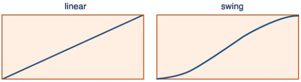
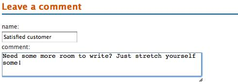

{% include JB/setup %}
{% raw %}
<div>
<div class="calibre3"></div><div class="toc" title="Chapter 3Animating, Scrolling, and Resizing"><div class="toc"><div class="toc"><div class="toc"><div class="calibre3"></div><h1 class="title"><a xmlns:saxon="http://icl.com/saxon" id="chapter_animating" class="calibre5"></a><span xmlns:d="http://docbook.org/ns/docbook" class="sitepoint-chapter-titlepage-label">Chapter <span class="sitepoint-chapter-titlepage-number">3</span></span><br xmlns:d="http://docbook.org/ns/docbook" class="calibre11"/><span xmlns:d="http://docbook.org/ns/docbook" class="calibre5">Animating, Scrolling, and Resizing</span></h1></div></div></div>
  
      

  
      The client team is extremely happy with our rapid and inspired
  first-round changes, and want to take it further. The company deals with the
  entertainment industry, and believe that the website should reflect what’s
  perceived as the exciting and dynamic nature intrinsic to the business. The
  team are also of the opinion that flashy animations will help boost
  sales.

  
      “I think it needs some of that Web 2.0 that I’ve been hearing about,”
  one of them says confidently. “Can you make it look more like a Web
  2.0?”

  
      “Errrm, indeed we can,” you assure him, as he passes you their next
  wish list chock-full of exciting changes: a list that will allow us to move
  beyond hiding and showing, and closer to our goal of being a jQuery
  ninja.

  
      <div class="toc" title="Animating"><div class="toc"><div class="toc"><div class="toc"><h2 class="title1"><a xmlns:saxon="http://icl.com/saxon" id="d4e2082" class="calibre5"></a>Animating</h2></div></div></div>
    
         

    
         jQuery was built to animate. Whether it’s fading out a warning
    message after a failed login, sliding down a menu control, or even
    powering a complete side-scrolling, “shoot ’em up” game, it’s all a snap
    with some powerful built-in methods, augmented with an extensive array of
    plugins.

    
         <div class="toc" title="Animating CSS Properties"><div class="toc"><div class="toc"><div class="toc"><h3 class="title2"><a xmlns:saxon="http://icl.com/saxon" id="d4e2085" class="calibre5"></a>Animating CSS Properties</h3></div></div></div>
      
            

      
            
               <a id="ch03-001"></a>We have mastered some valuable examples of <a id="ch03-00x"></a>
               <a id="ch03-00xx"></a>animation so far—sliding, fading, and some fancy hiding
      and showing—but we haven’t had a lot of control over what exactly is
      animated and exactly how it happens. It’s time to introduce a very
      exciting jQuery function, helpfully called <code class="email">animate</code>,
      which lets you animate a whole host of CSS properties to fashion some
      striking effects of your own. Let’s have a look at an example of
      <code class="email">animate</code> in action:

      
            <div class="toc"><a xmlns:saxon="http://icl.com/saxon" id="d4e2100"></a><div xmlns:l="http://docbook.sourceforge.net/xmlns/l10n/1.0" xmlns:d="http://docbook.org/ns/docbook" class="sitepoint-formal-example-heading"><em class="calibre8" title="chapter_03/01_animating_css/script.js (excerpt)">
		
                  <span class="sitepoint-formal-example-filename"><span>chapter_03/01_animating_css/script.js</span></span>
        (excerpt)
	</em></div><div class="toc">
        
               

        
               <pre class="programlisting">$('p').animate({ 
  padding: '20px',
  fontSize: '30px'
}, 2000);</pre>
      
            </div></div>

      
            This code will animate all paragraphs on the page, changing the
      padding from its initial state to 20 pixels, and increasing the font
      size to 30 pixels over a period of 2 seconds (2,000
      milliseconds).

      
            To use <code class="email">animate</code>, we pass an object literal
      containing the properties we would like to animate specified as
      <a id="ch03-002"></a>key/value pairs, much the same as when you assign multiple
      properties with the <code class="email">css</code> function. There’s one
      caveat that you’ll need to remember, though: <a id="ch03-003a"></a>
               <a id="ch03-003"></a>property names must be <a id="ch03-004"></a>camel-cased in order to be used by the animate function;
      that is to say, you’ll need to write <code class="email">backgroundColor</code>
      instead of <a id="ch03-005"></a>
               <a id="ch03-005a"></a>
               <code class="email">background-color</code>, and
      <code class="email">marginLeft</code> instead of <code class="email">margin-left</code>.
      That is unless of course you opt for <a id="ch03-006"></a>
               <a id="ch03-006a"></a>
               <code class="email">"background-color"</code>, and
      <code class="email">"margin-left"</code>. Any property name made up of multiple
      words needs to be modified with quotes in this way.

      
            
               <a id="ch03-008"></a>The <a id="ch03-007"></a>time frame parameter works exactly the same way as the
      simple animations we saw in <a href="ch02.html" title="Chapter 2Selecting, Decorating, and Enhancing">Chapter 2</a>: you
      can pass a number of milliseconds, or one of the strings
      <code class="email">slow</code>, <code class="email">fast</code>, or
      <code class="email">normal</code>. Values for CSS properties can be set in
      pixels, ems, percentages, or points. For example, you could write
      <code class="email">100px</code>, <code class="email">10em</code>,
      <code class="email">50%</code>, or <code class="email">16pt</code>.

      
            
               <a id="ch03-009a"></a>
               <a id="ch03-009b"></a>
               <a id="ch03-009"></a>
               <a id="ch03-009c"></a>Even more excitingly, the values you define can be
      <span><em class="calibre8">relative</em></span> to the element’s current values: all you
      need to do is specify <a id="ch03-010"></a>
               <code class="email">+=</code> or <a id="ch03-011"></a>
               <code class="email">-=</code> in front of the value, and that
      value will be added to or subtracted from the element’s current
      property. Let’s use this ability to make our navigation menu swing as we
      pass our mouse over the menu items using the <a id="ch03-012"></a>
               <code class="email">hover</code> function:

      
            <div class="toc"><a xmlns:saxon="http://icl.com/saxon" id="d4e2174"></a><div xmlns:l="http://docbook.sourceforge.net/xmlns/l10n/1.0" xmlns:d="http://docbook.org/ns/docbook" class="sitepoint-formal-example-heading"><em class="calibre8" title="chapter_03/02_relative_css_animation/script.js (excerpt)">
		
                  <span class="sitepoint-formal-example-filename"><span>chapter_03/02_relative_css_animation/script.js</span></span>
        (excerpt)
	</em></div><div class="toc">
        
               

        
               <pre class="programlisting">$('#navigation li').hover(function() {
  $(this).animate({paddingLeft: <span><strong class="calibre9">'+=15px'</strong></span>}, 200);
}, function() {
  $(this).animate({paddingLeft: <span><strong class="calibre9">'-=15px'</strong></span>}, 200);
});</pre>
      
            </div></div>

      
            Mouse over the navigation menu, and you’ll see the links wobble
      around nicely.

      
            You can also use <code class="email">animate</code> to achieve
      fine-grained control over the <a id="ch03-013"></a>showing, <a id="ch03-014"></a>hiding, and <a id="ch03-015"></a>
               <a id="ch03-015a"></a>toggling functions we saw in <a href="ch02.html" title="Chapter 2Selecting, Decorating, and Enhancing">Chapter 2</a>. We simply specify a property’s animation
      value as <code class="email">show</code>, <code class="email">hide</code>, or
      <code class="email">toggle</code>, rather than a numeric amount:

      
            <div class="toc"><a xmlns:saxon="http://icl.com/saxon" id="d4e2199"></a><div xmlns:l="http://docbook.sourceforge.net/xmlns/l10n/1.0" xmlns:d="http://docbook.org/ns/docbook" class="sitepoint-formal-example-heading"><em class="calibre8" title="chapter_03/03_animate_show_hide/script.js (excerpt)">
		
                  <span class="sitepoint-formal-example-filename"><span>chapter_03/03_animate_show_hide/script.js</span></span>
        (excerpt)
	</em></div><div class="toc">
        
               

        
               <pre class="programlisting">$('#disclaimer').animate({ 
  opacity: 'hide',
  height: 'hide'
}, 'slow');</pre>
      
            </div></div>

      
            It’s terribly satisfying seeing elements animate. As an exercise,
      try animating every element property you can think of, and you’ll
      stumble on some interesting effects! The
      <code class="email">animate</code> function also has some powerful
      advanced options, which we’ll examine in detail over the course of this
      chapter.<a id="d4e2205"></a>
               <div class="tip" title="Warning: CSS Animation"><h3 class="title2">Warning: CSS Animation
                     
                     
                  </h3>
          
                  

          
                  Unless you’re reading this chapter in 2022, HTML5, and hence
          CSS3, is likely to still be a <a href="http://wiki.whatwg.org/wiki/FAQ#What_does_.22Living_Standard.22_mean.3F">Living
          Standard.</a> That’s a nice way of saying that there are still
          areas that are yet to be finalized. There are even areas being added
          as we read this. Talk about your exciting times!

          
                  Obviously, though, it’s not <span><em class="calibre8">all</em></span> good. The
          cross-browser concerns that we’re used to are tricky enough with our
          10-year-old HTML 4, so it’s no surprise they can be a little fraught
          for what lies ahead. What is good news is that we can rest assured
          that as soon as they can, the jQuery team will make use of the
          evolving standards to improve the library. Sure, libraries exist
          that aren’t so careful of cross-browser concerns, but we want all
          our site’s visitors to have a great experience. We’ll take a look
          later at how we can nudge things along a little, but till then we’ll
          keep an eye out for what HTML5 and CSS3 can offer, and make use of
          our powerful jQuery technology.<a id="d4e2221"></a>
                     <a id="d4e2222"></a>
                     <a id="d4e2223"></a>
                  
        
               </div>
            
    
         </div>

    
         <div class="toc" title="Color Animation"><div class="toc"><div class="toc"><div class="toc"><h3 class="title2"><a xmlns:saxon="http://icl.com/saxon" id="section_color_animation" class="calibre5"></a>Color Animation<a id="ch03-017" class="calibre5"></a>
               <a id="ch03-017a" class="calibre5"></a>
            </h3></div></div></div>
      
            

      
            Once you realize how cool the <code class="email">animate</code>
      function is, you’ll probably want to animate an element’s color.
      However, animating color is a little bit tricky, because the color
      values “in between” the start and end colors need to be calculated in a
      special way. Unlike a height or width value that moves from one value to
      another in a simple, linear manner, jQuery needs to do some extra math
      to figure out what color is, say, three-quarters of the way between
      light blue and orange.

      
            This color-calculating functionality is omitted from the core
      library. It makes sense when you think about it: most projects have no
      need for this functionality, so jQuery can keep the size of the core
      library to a minimum. If you want to animate color, you’re going to need
      to download the <a id="ch03-018a"></a>
               <a id="ch03-018"></a>
               <a href="http://plugins.jquery.com/project/color">Color
      Animations plugin.</a>
            

      
            <div class="tip" title="Important: Using Plugins"><h3 class="title2">Important: Using Plugins</h3>
        
               

        
               The <a href="http://plugins.jquery.com/">official jQuery
        plugin repository</a> used to contain an ever-increasing number of
        plugins, some more useful than others, where you could search for
        plugins by name, category (such as effects or utilities), or by the
        rating it received from the jQuery community.

        
               As we mentioned in <a href="ch01.html" title="Chapter 1Falling in Love with jQuery">Chapter 1</a>,
        the plugin repository is now under development, but the project can be
        tracked on GitHub, and you can always do an online search for the
        particular plugin you’re looking for.
      
            </div>

      
            After downloading and including the Color Animations plugin, you
      can now animate color properties in your jQuery animation code, just as
      you would other CSS properties. Let’s gradually highlight our disclaimer
      message over a period of two seconds as the page loads, to make sure no
      one misses it:

      
            <div class="toc"><a xmlns:saxon="http://icl.com/saxon" id="d4e2249"></a><div xmlns:l="http://docbook.sourceforge.net/xmlns/l10n/1.0" xmlns:d="http://docbook.org/ns/docbook" class="sitepoint-formal-example-heading"><em class="calibre8" title="chapter_03/04_color_animation/script.js (excerpt)">
		
                  <span class="sitepoint-formal-example-filename"><span>chapter_03/04_color_animation/script.js</span></span>
        (excerpt)
	</em></div><div class="toc">
        
               

        
               <pre class="programlisting">$('#disclaimer').animate({'backgroundColor':'#ff9f5f'}, 2000);</pre>
      
            </div></div>

      
            Does anything about that last example make you animated? Remember,
      we said you can use camel case or quotes? Well here’s another
      combination—quoted camel case.

      
            Rather than setting out to confuse you, we’re just letting you
      know you have options. In your <a id="ch03-019"></a>object literals, the key can either be unquoted,
      single-quoted, or double-quoted—take your pick. The only point to
      remember is that if you use anything other other than letters and
      numbers, you have to use one of the quoting options. So anything that’s
      not a valid variable name needs quoting.<a id="d4e2258"></a>
               <a id="d4e2259"></a>
            
    
         </div>

    
         <div class="toc" title="Easing"><div class="toc"><div class="toc"><div class="toc"><h3 class="title2"><a xmlns:saxon="http://icl.com/saxon" id="d4e2260" class="calibre5"></a>Easing<a id="ch03-020x" class="calibre5"></a>
            </h3></div></div></div>
      
            

      
            
               <span><strong class="calibre9">Easing</strong></span> refers to the acceleration and
      deceleration that occurs during an animation to give it a more natural
      feel. Easing applies a mathematical algorithm to alter the speed of an
      animation as it progresses. Thankfully, we’re using jQuery, so you can
      leave your high-school math skills safely locked away.

      
            There are two types of easing available to use in jQuery:
      <a id="ch03-021"></a>
               <a id="ch03-021a"></a>
               <code class="email">linear</code> and <a id="ch03-022"></a>
               <a id="ch03-022a"></a>
               <code class="email">swing</code>. Any time you use an animation
      function in jQuery, you can specify either of these parameters to
      control the animation’s easing. The difference between them can be seen
      in <a href="ch03.html#fig_easing_options" title="Figure 3.1. jQuery’s easing options">Figure 3.1</a>, which shows how a property is
      adjusted over the period of an animation depending on which easing
      option you select.

      
            <div class="toc"><a xmlns:saxon="http://icl.com/saxon" id="fig_easing_options"></a><div class="figure-contents">
        
               

        
               <div class="figure-contents"></div>
      
            </div><p xmlns:l="http://docbook.sourceforge.net/xmlns/l10n/1.0" xmlns:d="http://docbook.org/ns/docbook" class="title4">Figure 3.1. jQuery’s easing options<a id="ch03-021f"></a>
                  <a id="ch03-022f"></a>
                  <a id="ch03-021af"></a>
                  <a id="ch03-022af"></a>
                  <a id="ch03-020af"></a>
               </p></div>

      
            
               <code class="email">swing</code> easing starts off slowly before gaining
      speed, then towards the end of the animation it slows down again, nice
      and gently. Visually, swing easing looks far more natural than linear
      easing, and jQuery uses it by default if no easing parameter is
      specified.

      
            The <code class="email">linear</code> easing method has no acceleration or
      deceleration: animations occur at a constant rate. It looks fairly
      boring and a bit rigid in most circumstances, but it’s worth giving it a
      try; it might just be appropriate for your purposes.

      
            As an example, we’ll animate the first paragraph tag so that when
      clicked, it grows and shrinks; we’ll use linear easing as it grows, and
      swing easing as it shrinks. The difference is quite subtle, but if you
      repeat the animations a few times you should be able to distinguish
      between them; the shrinking animation feels more natural:

      
            <div class="toc"><a xmlns:saxon="http://icl.com/saxon" id="d4e2306"></a><div xmlns:l="http://docbook.sourceforge.net/xmlns/l10n/1.0" xmlns:d="http://docbook.org/ns/docbook" class="sitepoint-formal-example-heading"><em class="calibre8" title="chapter_03/05_easing/script.js (excerpt)">
		
                  <span class="sitepoint-formal-example-filename"><span>chapter_03/05_easing/script.js</span></span>
        (excerpt)
	</em></div><div class="toc">
        
               

        
               <pre class="programlisting">$('p:first').toggle(function() {<a xmlns:saxon="http://icl.com/saxon" id="easing1"></a><span xmlns:l="http://docbook.sourceforge.net/xmlns/l10n/1.0" xmlns:d="http://docbook.org/ns/docbook" class="sitepoint-callout-bug">(1)</span>
  $(this).animate({'height':'+=150px'}, 2000, 'linear');<a xmlns:saxon="http://icl.com/saxon" id="easing2"></a><span xmlns:l="http://docbook.sourceforge.net/xmlns/l10n/1.0" xmlns:d="http://docbook.org/ns/docbook" class="sitepoint-callout-bug">(2)</span>
}, function() {
  $(this).animate({'height':'-=150px'}, 2000, 'swing');<a xmlns:saxon="http://icl.com/saxon" id="easing3"></a><span xmlns:l="http://docbook.sourceforge.net/xmlns/l10n/1.0" xmlns:d="http://docbook.org/ns/docbook" class="sitepoint-callout-bug">(3)</span>
});</pre>
      
            </div></div>

      
            There’s quite a lot of jQuery in this statement, so now might be a
      good time to pause and make sure you understand everything that’s going
      on here:

      
            <div class="toc"><table border="0" summary="Callout list" class="calibre13"><tr class="calibre14"><td valign="top" class="calibre15"><p class="calibre16"><a href="#easing1"><span xmlns:l="http://docbook.sourceforge.net/xmlns/l10n/1.0" xmlns:d="http://docbook.org/ns/docbook" class="sitepoint-callout-bug">(1)</span></a> </p></td><td valign="top" class="calibre15">
          
                  We use a filter with a selector to grab only the first
          paragraph tag. A toggle event handler (which executes each passed
          function on successive clicks) is attached to the paragraph.
        
               </td></tr><tr class="calibre14"><td valign="top" class="calibre15"><p class="calibre16"><a href="#easing2"><span xmlns:l="http://docbook.sourceforge.net/xmlns/l10n/1.0" xmlns:d="http://docbook.org/ns/docbook" class="sitepoint-callout-bug">(2)</span></a> </p></td><td valign="top" class="calibre15">
          
                  Inside the handlers we select <code class="email">this</code>, which
          refers to the element that triggered the event (in our example, it’s
          the paragraph itself). The first handler uses the
          <code class="email">+=</code> format to grow the paragraph’s height by 150
          pixels using the <code class="email">linear</code> easing function.
        
               </td></tr><tr class="calibre14"><td valign="top" class="calibre15"><p class="calibre16"><a href="#easing3"><span xmlns:l="http://docbook.sourceforge.net/xmlns/l10n/1.0" xmlns:d="http://docbook.org/ns/docbook" class="sitepoint-callout-bug">(3)</span></a> </p></td><td valign="top" class="calibre15">
          
                  The second handler uses the <code class="email">-=</code> format to
          shrink the paragraph’s height by 150 pixels using the
          <code class="email">swing</code> easing function.<a id="d4e2326"></a>
                     <a id="d4e2327"></a>
                     <a id="d4e2328"></a>
                     <a id="d4e2329"></a>
                  
        
               </td></tr></table></div>

      
            If you managed to follow along and understand each of these steps,
      pat yourself on the back! You’re really getting the hang of
      jQuery!
    
         </div>

    
         <div class="toc" title="Advanced Easing"><div class="toc"><div class="toc"><div class="toc"><h3 class="title2"><a xmlns:saxon="http://icl.com/saxon" id="d4e2331" class="calibre5"></a>Advanced Easing<a id="ch03-023" class="calibre5"></a>
               <a id="ch03-023a" class="calibre5"></a>
               <a id="ch03-023b" class="calibre5"></a>
            </h3></div></div></div>
      
            

      
            As stated, swing easing provides a more visually pleasing
      transition, and is probably adequate for most tasks. But swing and
      linear easing are just the tip of the iceberg. There is a vast array of
      easing options beyond these two basic types included in the core jQuery
      library. Most of these are available in the <a href="http://plugins.jquery.com/project/Easing">easing plugin,</a>
      available from the jQuery plugin repository.

      
            <div class="tip" title="Tip: jQuery UI Includes Several Plugins"><h3 class="title2">Tip: jQuery UI Includes Several Plugins</h3>
        
               

        
               The easing library is also included in the effects section of
        the <a id="ch03-024"></a>jQuery UI library, which we’ll be visiting shortly. If
        you’re starting to suffer from plugin fatigue, you might like to skip
        forward to <a href="ch03.html#section_jquery_ui" title="The jQuery UI Library">the section called “The jQuery UI Library
            ”</a>: this library includes
        several common plugins, including color animation, class transitions,
        and easing. By including the jQuery UI library, you’ll avoid needing
        to include each plugin separately in your pages.
      
            </div>

      
            Just download and include the plugin’s JavaScript file in your
      HTML page, anywhere after the jQuery library. Rather than providing you
      with new functions, the easing plugin simply gives you access to over 30
      new easing options. Explaining what all these easing functions do would
      test even the most imaginative writer, so we’ll simply direct your
      attention to <a href="ch03.html#fig_advanced_easing_options" title="Figure 3.2. Advanced easing options">Figure 3.2</a>, where you
      can see a few of the algorithms represented graphically.

      
            You’ll notice that some of the algorithms move out of the graph
      area; when animated elements reach this part of the transition, they’ll
      move <span><em class="calibre8">past</em></span> their destination and then turn back to
      settle there. The effect is that of an element attached to a piece of
      elastic, which gently pulls everything back into place.

      
            <div class="toc"><a xmlns:saxon="http://icl.com/saxon" id="fig_advanced_easing_options"></a><div class="figure-contents">
        
               

        
               <div class="figure-contents"></div>
      
            </div><p xmlns:l="http://docbook.sourceforge.net/xmlns/l10n/1.0" xmlns:d="http://docbook.org/ns/docbook" class="title4">Figure 3.2. Advanced easing options<a id="ch03-023f"></a>
                  <a id="ch03-023af"></a>
                  <a id="ch03-023bf"></a>
               </p></div>

      
            To use one of the new algorithms, we just need to pass its name to
      our <code class="email">animate</code> function. There are lots to choose
      from, so we might as well jump straight into it and try a few:

      
            <div class="toc"><a xmlns:saxon="http://icl.com/saxon" id="d4e2369"></a><div xmlns:l="http://docbook.sourceforge.net/xmlns/l10n/1.0" xmlns:d="http://docbook.org/ns/docbook" class="sitepoint-formal-example-heading"><em class="calibre8" title="chapter_03/06_other_easing_options/script.js (excerpt)">
		
                  <span class="sitepoint-formal-example-filename"><span>chapter_03/06_other_easing_options/script.js</span></span>
        (excerpt)
	</em></div><div class="toc">
        
               

        
               <pre class="programlisting">$('p:first').animate({height: '+=300px'}, 2000, 'easeOutBounce');
$('p:first').animate({height: '-=300px'}, 2000, 'easeInOutExpo');
$('p:first').animate({height: 'hide'}, 2000, 'easeOutCirc');
$('p:first').animate({height: 'show'}, 2000, 'easeOutElastic');</pre>
      
            </div></div>

      
            Look at that paragraph go! You might want to know where these
      easing option names are coming from, or where you can see the full list.
      The algorithms originated from <a id="ch03-025"></a>Robert Penner’s easing equations, which are described in
      detail on <a href="http://www.robertpenner.com/easing/">his
      website.</a>
            

      
            The best way to see all the available equations is to view the
      plugin’s source code, or take a look at the jQuery UI easings demo. If
      you’re keen to use your text editor, open up the file you downloaded and
      there will be a list of functions you can use in jQuery animations. If
      you’re keen to see an effect in your browser, the <a href="http://jqueryui.com/demos/effect/#easing/">jQuery UI canvas-based
      solution is for you.</a>
            

      
            <div class="tip" title="Tip: Time to Play Around"><h3 class="title2">Tip: Time to Play Around</h3>
        
               

        
               Take a break and test out all the easing functions that the
        plugin makes available. It’s unlikely you’ll ever need to use all of
        them, but becoming familiar with them will let you choose the right
        one to give your interface the precise feel you want. Moreover,
        playing around with the <code class="email">animate</code> function will
        cement your knowledge of it: it’s an important part of a jQuery
        ninja’s arsenal!<a id="d4e2383"></a>
                  <a id="d4e2384"></a>
                  <a id="d4e2385"></a>
               
      
            </div>
    
         </div>

    
         <div class="toc" title="Bouncy Content Panes"><div class="toc"><div class="toc"><div class="toc"><h3 class="title2"><a xmlns:saxon="http://icl.com/saxon" id="section_bouncy_content_panes" class="calibre5"></a>Bouncy Content Panes<a id="ch03-026a" class="calibre5"></a>
               <a id="ch03-026b" class="calibre5"></a>
               <a id="ch03-026" class="calibre5"></a>
               <a id="ch03-026c" class="calibre5"></a>
            </h3></div></div></div>
      
            

      
            Now that we’ve learned a bit about how the
      <code class="email">animate</code> function works, let’s have a look at
      our client’s latest round of requests. Today’s to-do list includes the
      addition of a vitally important page component: the
      <span><em class="calibre8">StarTrackr! Daily “Who’s Hot Right Now?” List</em></span> (or
      the SDWHRNL for short). The list consists of the latest celebrities to
      fall in or out of favor, along with an accompanying photo and brief bio.
      We’ll apply some of the animation and easing techniques we’ve just
      learned to implement the list as panes that can be opened and closed
      independently.

      
            The appearance of the widget in the page is shown in <a href="ch03.html#fig_biography_panes" title="Figure 3.3. Biography panes">Figure 3.3</a>.

      
            <div class="toc"><a xmlns:saxon="http://icl.com/saxon" id="fig_biography_panes"></a><div class="figure-contents">
        
               

        
               <div class="figure-contents"></div>
      
            </div><p xmlns:l="http://docbook.sourceforge.net/xmlns/l10n/1.0" xmlns:d="http://docbook.org/ns/docbook" class="title4">Figure 3.3. Biography panes<a id="ch03-026f"></a>
               </p></div>

      
            In our HTML, we’ll implement the section as a <code class="email">div</code> element containing all our celebrities.
      Each celebrity’s pane will be marked up as an <code class="email">h3</code>, followed by another <code class="email">div</code> containing an image and a short
      paragraph:

      
            <div class="toc"><a xmlns:saxon="http://icl.com/saxon" id="d4e2414"></a><div xmlns:l="http://docbook.sourceforge.net/xmlns/l10n/1.0" xmlns:d="http://docbook.org/ns/docbook" class="sitepoint-formal-example-heading"><em class="calibre8" title="chapter_03/07_bouncy_content_panes/index.html (excerpt)">
		
                  <span class="sitepoint-formal-example-filename"><span>chapter_03/07_bouncy_content_panes/index.html</span></span>
        (excerpt)
	</em></div><div class="toc">
        
               

        
               <pre class="programlisting">&lt;section id="bio"&gt;
  &lt;h2&gt;Who’s Hot Right Now?&lt;/h2&gt;

  &lt;h3&gt;Beau Dandy&lt;/h3&gt;
  &lt;div&gt;
    &lt;img src="../images/beau_100.jpg" width="100" 
      height="100" alt="Beau Dandy"/&gt;
    &lt;p&gt;Content about Beau Dandy&lt;/p&gt;
  &lt;/div&gt;

  &lt;h3&gt;Johnny Stardust&lt;/h3&gt;
  &lt;div&gt;
    &lt;img src="../images/johnny_100.jpg" width="100" 
      height="100" alt="Johnny Stardust"/&gt;
    &lt;p&gt;Content about Johnny Stardust&lt;/p&gt;
  &lt;/div&gt;

  &lt;h3&gt;Glendatronix&lt;/h3&gt;
  &lt;div&gt;
    &lt;img src="../images/glenda_100.jpg" width="100" 
      height="100" alt="Glendatronix"/&gt;
    &lt;p&gt;Content about Glendatronix&lt;/p&gt;
  &lt;/div&gt;
&lt;/section&gt;</pre>
      
            </div></div>

      
            When a user clicks on one of the headings, we want the associated
      content pane to toggle open and closed. You can style your panes however
      you see fit, but having a block-level element for a heading with a
      different-colored background is a common technique: it provides a clear
      call to action for the user to click on it.

      
            <div class="tip" title="Tip: “Jumpy” animation?"><h3 class="title2">Tip: “Jumpy” animation?</h3>
        
               

        
               
                  <a id="ch03-027"></a>One quirk to be aware of is that animating an element
        directly next to a <a id="ch03-028"></a>heading tag can sometimes look “jumpy,” especially when
        the element hides. This is due to the heading’s margin, which
        collapses as the following element hides. A simple workaround, which
        we’ve used here, is to remove margins from the heading tag
        entirely.
      
            </div>

      
            We want to avoid showing any content when the page loads, so our
      first task is to hide all the content containers:

      
            <div class="toc"><a xmlns:saxon="http://icl.com/saxon" id="d4e2428"></a><div xmlns:l="http://docbook.sourceforge.net/xmlns/l10n/1.0" xmlns:d="http://docbook.org/ns/docbook" class="sitepoint-formal-example-heading"><em class="calibre8" title="chapter_03/07_bouncy_content_panes/script.js (excerpt)">
		
                  <span class="sitepoint-formal-example-filename"><span>chapter_03/07_bouncy_content_panes/script.js</span></span>
        (excerpt)
	</em></div><div class="toc">
        
               

        
               <pre class="programlisting">$('#bio &gt; div').hide();</pre>
      
            </div></div>

      
            If, instead, you’d prefer to have one pane open by default, you
      could specify it here. This can help to make it more evident to users
      that there’s content “hidden” in the panes, and that they’re meant to
      click on the headings to reveal it. Making this work in jQuery is
      simple: we merely apply the <code class="email">:first</code> filter and call
      the <code class="email">show</code> action to reveal only the first
      pane:

      
            <pre class="programlisting">$('#bio &gt; div:first').show();</pre>

      
            <div class="tip" title="Important: The Child Selector"><h3 class="title2">Important: The Child Selector</h3>
        
               

        
               
                  <a id="ch03-029a"></a>There’s a new selector feature in these examples that
        we’ve yet to cover. It’s the <a id="ch03-029b"></a>
                  <a id="ch03-029"></a>
                  <a id="ch03-029c"></a>
                  <span><strong class="calibre9">child</strong></span> selector, and it’s
        indicated by the greater-than angle bracket (<a id="ch03-030"></a>
                  <a id="ch03-030a"></a>
                  <code class="email">&gt;</code>). A child selector selects all
        the immediate children that match the selector. If we’d omitted the
        child selector, our code would select all <code class="email">div</code> elements underneath the bio <code class="email">div</code> element, even if they were nested inside
        other elements. For more details and code examples using this
        selector, check out the <a href="http://docs.jquery.com/Selectors/child">jQuery API
        documentation.</a>
               
      
            </div>

      
            Now that our content is marked up the way we want it, we simply
      add some jQuery interaction magic to it. To reveal our secret content
      we’ll take the familiar approach of capturing the
      <code class="email">click</code> event, finding the next element (which
      contains our content), and showing it, as we did in <a href="ch02.html" title="Chapter 2Selecting, Decorating, and Enhancing">Chapter 2</a>. But this time, we’ll employ a touch of
      “bounce” easing to the content’s height, so that the panes bounce in and
      out of view:

      
            <div class="toc"><a xmlns:saxon="http://icl.com/saxon" id="d4e2464"></a><div xmlns:l="http://docbook.sourceforge.net/xmlns/l10n/1.0" xmlns:d="http://docbook.org/ns/docbook" class="sitepoint-formal-example-heading"><em class="calibre8" title="chapter_03/07_bouncy_content_panes/script.js (excerpt)">
		
                  <span class="sitepoint-formal-example-filename"><span>chapter_03/07_bouncy_content_panes/script.js</span></span>
        (excerpt)
	</em></div><div class="toc">
        
               

        
               <pre class="programlisting">$('#bio h3').click(function() {
  $(this).next().animate( 
    {'height':'toggle'}, 'slow', 'easeOutBounce'
  );
});</pre>
      
            </div></div>

      
            The easing function <a id="ch03-031"></a>
               <code class="email">easeOutBounce</code> produces a great
      bouncing-ball effect, which works wonderfully for content panes like
      this. Give it a spin in your browser and see for yourself!<a id="d4e2473"></a>
               <a id="d4e2474"></a>
               <a id="d4e2475"></a>
               <a id="d4e2476"></a>
            
    
         </div>

    
         <div class="toc" title="The Animation Queue"><div class="toc"><div class="toc"><div class="toc"><h3 class="title2"><a xmlns:saxon="http://icl.com/saxon" id="d4e2477" class="calibre5"></a>The Animation Queue<a id="ch03-032" class="calibre5"></a>
            </h3></div></div></div>
      
            

      
            The last topic we’re going to look at concerning animation is
      another advanced use of the <code class="email">animate</code> function.
      It turns out <code class="email">animate</code> can be called with a set
      of extra options, like this:

      
            <pre class="programlisting">animate(parameters, <span><strong class="calibre9">options</strong></span>);</pre>

      
            The <em class="calibre8"><code class="email">options</code></em> parameter is a bundle of
      options packaged together as an object literal made up of key/value
      pairs. We’re already familiar with several of the available options:
      <a id="ch03-033"></a>
               <em class="calibre8"><code class="email">duration</code></em>, <a id="ch03-034"></a>
               <em class="calibre8"><code class="email">easing</code></em>, and <a id="ch03-035"></a>
               <em class="calibre8"><code class="email">complete</code></em> (the callback method).
      There are, however, a couple of new ones: <a id="ch03-036"></a>
               <em class="calibre8"><code class="email">step</code></em> and <a id="ch03-037"></a>
               <em class="calibre8"><code class="email">queue</code></em>. Before we explain them,
      let’s take a look at the syntax for calling the
      <code class="email">animate</code> function with an
      <em class="calibre8"><code class="email">options</code></em> parameter:

      
            <div class="toc"><a xmlns:saxon="http://icl.com/saxon" id="d4e2512"></a><div xmlns:l="http://docbook.sourceforge.net/xmlns/l10n/1.0" xmlns:d="http://docbook.org/ns/docbook" class="sitepoint-formal-example-heading"><em class="calibre8" title="chapter_03/08_animation_queue/script.js (excerpt)">
		
                  <span class="sitepoint-formal-example-filename"><span>chapter_03/08_animation_queue/script.js</span></span>
        (excerpt)
	</em></div><div class="toc">
        
               

        
               <pre class="programlisting">$('p:first').animate(
  { 
    height: '+=100px',
    color: 'green'
  },
<span><strong class="calibre9">  {
    duration: 'slow',
    easing: 'swing',
    complete: function() {alert('done!');},
    queue: false
  }</strong></span>
); </pre>
      
            </div></div>

      
            Notice that you can accomplish almost all of this with the simpler
      format that we’ve already seen. You only need the advanced version if
      you want to specify additional settings, like the
      <code class="email">queue</code> parameter.

      
            
               <a id="ch03-038"></a>The queue is the list of animations waiting to occur on a
      particular element. Every time we ask jQuery to perform an animation on
      an element, that animation is added to the queue. The element executes
      the queue one at a time until everything is complete. You’ve probably
      already seen this if you’ve gone click-happy on one of our demos.

      
            There are many situations where this will be undesirable, though.
      Sometimes you’ll want multiple animations to occur at the same time. If
      you disable the queue when you specify an animation, further animations
      can run in parallel.

      
            
               <a id="ch03-038a"></a>The animation queue can be controlled by using the
      <code class="email">queue</code> option, as well as with the jQuery actions
      <a id="ch03-039"></a>
               <code class="email">stop</code>, <a id="ch03-040"></a>
               <code class="email">queue</code>, and <a id="ch03-041"></a>
               <code class="email">dequeue</code>. This combination of
      actions and options gives us super-fine control over how our animations
      run. But before we can really sink our teeth into these juicy options,
      it’s time to unveil one of the most important jQuery techniques
      around.<a id="d4e2541"></a>
               <a id="d4e2542"></a>
            
    
         </div>

    
         <div class="toc" title="Chaining Actions"><div class="toc"><div class="toc"><div class="toc"><h3 class="title2"><a xmlns:saxon="http://icl.com/saxon" id="d4e2543" class="calibre5"></a>Chaining Actions<a id="ch03-042" class="calibre5"></a>
               <a id="ch03-042a" class="calibre5"></a>
               <a id="ch03-042b" class="calibre5"></a>
            </h3></div></div></div>
      
            

      
            So far, we’ve been writing statements one at a time: either one
      after the other, or nested inside callback functions. We’ve needed to
      either rewrite our selectors, or make use of the <code class="email">this</code>
      keyword to find our targets again. However, there’s a technique that
      allows us to run multiple jQuery commands, one after the other, on the
      same element(s). We call this chaining, so to release the ninja inside
      of you, you’d better pay attention to this bit.

      
            
               <span><strong class="calibre9">Chaining</strong></span> links two or more jQuery actions,
      or methods, into a single statement. To chain an action, you simply
      append it to the previous action. For example, let’s chain together the
      <code class="email">hide</code>, <code class="email">slideDown</code>, and
      <code class="email">fadeOut</code> actions. Our element quickly hides and
      then slides into view, before fading away:

      
            <pre class="programlisting">$('p:first').hide().slideDown('slow').fadeOut();</pre>

      
            You can chain together as many actions as you like. Be careful,
      though: chaining can quickly become addictive. As well as being able to
      chain actions based on your initial selector, you can also move around
      the DOM, adding and removing elements as you go, which can lead to some
      quite hairy statements.

      
            It’s often good to lay out your actions on separate lines for
      clarity. This takes up a lot more space, but is much easier to read and
      maintain. Our previous example could be rewritten like this:

      
            <pre class="programlisting">$('p:first')
  .hide()
  .slideDown('slow')
  .fadeOut();</pre>

      
            It’s important to realize that the jQuery selector contains the
      modified results of each action that runs before launching the next
      action. This means that we can add and remove elements as we go along,
      only applying actions to the current selection.

      
            If you revisit some of our earlier examples, you might spot a few
      chained actions hidden in the code; for example, when we wrote:
      <code class="email">$(this).next().animate()</code>. The
      <code class="email">next</code> action moved our selection to the next DOM
      element, and then the <code class="email">animate</code> action animated
      it without affecting the original element.

      
            You’ll have plenty of chances from now on to play with chaining;
      the rest of this book is going to be filled with it. It’s the most fun
      part of jQuery!
    
         </div>

    
         <div class="toc" title="Pausing the Chain"><div class="toc"><div class="toc"><div class="toc"><h3 class="title2"><a xmlns:saxon="http://icl.com/saxon" id="d4e2571" class="calibre5"></a>Pausing the Chain</h3></div></div></div>
      
            

      
            If you’d like to pause briefly in the middle of a jQuery chain,
      you can use the <a id="ch03-043b"></a>
               <a id="ch03-043"></a>
               <a id="ch03-043a"></a>
               <code class="email">delay</code> action. Simply give it a
      number, and it will delay the queue for that many milliseconds before
      continuing. So, referring to the same example, we could write:

      
            <pre class="programlisting">$('p:first')
  .hide()
  .slideDown('slow')
  .delay(2000)
  .fadeOut();</pre>

      
            This code will slide down the paragraph, and then wait two seconds
      before fading it out. It can be a great way to control your animations
      more precisely.<a id="d4e2586"></a>
               <a id="d4e2587"></a>
               <a id="d4e2588"></a>
            
    
         </div>

    
         <div class="toc" title="Animated Navigation"><div class="toc"><div class="toc"><div class="toc"><h3 class="title2"><a xmlns:saxon="http://icl.com/saxon" id="section_animated_nav" class="calibre5"></a>Animated Navigation<a id="ch03-044" class="calibre5"></a>
               <a id="ch03-044x" class="calibre5"></a>
            </h3></div></div></div>
      
            

      
            The client team is sticking to its guns on this issue: the team
      members want the top-level navigation to be a Flash control that wobbles
      and zooms around as the user interacts with it. Flash just looks better,
      they claim. You assure them that your Flash skills are second to none,
      and will whip up a proof of concept for them right away.

      
            Okay. Now, with the client team out of the room, let’s apply our
      newly discovered jQuery power to create a <a id="ch03-045"></a>Flash-like navigation bar. It will have a background
      “blob” that wobbles around to highlight the menu choice the user is
      hovering over. And we’ll do it all with free, standard technologies:
      HTML, CSS, and JavaScript. Flash? We don’t need no stinkin’
      Flash!

      
            We’re sticking with a basic animation so that the steps are easier
      to follow. First off, we have modified the CSS pertaining to our
      navigation menu, so that it’s laid out horizontally rather than
      vertically. As a refresher, here’s what the HTML for the navigation
      looks like:

      
            <div class="toc"><a xmlns:saxon="http://icl.com/saxon" id="d4e2603"></a><div xmlns:l="http://docbook.sourceforge.net/xmlns/l10n/1.0" xmlns:d="http://docbook.org/ns/docbook" class="sitepoint-formal-example-heading"><em class="calibre8" title="chapter_03/09_animated_navigation/index.html (excerpt)">
		
                  <span class="sitepoint-formal-example-filename"><span>chapter_03/09_animated_navigation/index.html</span></span>
        (excerpt)
	</em></div><div class="toc">
        
               

        
               <pre class="programlisting">&lt;ul id="navigation"&gt;
  &lt;li&gt;&lt;a href="#"&gt;Home&lt;/a&gt;&lt;/li&gt;
  &lt;li&gt;&lt;a href="#"&gt;About Us&lt;/a&gt;&lt;/li&gt;
  &lt;li&gt;&lt;a href="#"&gt;Buy!&lt;/a&gt;&lt;/li&gt;
  &lt;li&gt;&lt;a href="#"&gt;Gift Ideas&lt;/a&gt;&lt;/li&gt;
&lt;/ul&gt;</pre>
      
            </div></div>

      
            Our background color blob will be an empty <code class="email">div</code> element, positioned behind whichever
      navigation link the user is mousing over. Our first task, therefore,
      will be to create the element and append it to the document:

      
            <div class="toc"><a xmlns:saxon="http://icl.com/saxon" id="d4e2609"></a><div xmlns:l="http://docbook.sourceforge.net/xmlns/l10n/1.0" xmlns:d="http://docbook.org/ns/docbook" class="sitepoint-formal-example-heading"><em class="calibre8" title="chapter_03/09_animated_navigation/script.js (excerpt)">
		
                  <span class="sitepoint-formal-example-filename"><span>chapter_03/09_animated_navigation/script.js</span></span>
        (excerpt)
	</em></div><div class="toc">
        
               

        
               <pre class="programlisting">$('&lt;div id="navigation_blob"&gt;&lt;/div&gt;').css({ 
  width: 0,
  height: $('#navigation li:first a').height() + 10
}).appendTo('#navigation');</pre>
      
            </div></div>

      
            Notice that we’re selecting the navigation link
      <span><em class="calibre8">inside</em></span> the object literal to provide values for the
      width and height. This may seem strange if you’re new to programming,
      but you shouldn’t let it frighten you; in general, you can use the
      returned (or <a id="ch03-046a"></a>
               <a id="ch03-046"></a>
               <a id="ch03-046b"></a>calculated) value of a function anywhere you can put a
      static value. We’re also adding 10 pixels to each of those values, so
      that the blob is slightly larger than the anchor tag it will sit
      behind.<div class="tip" title="Note: Unit’ed We Stand"><h3 class="title2">Note: Unit’ed We Stand</h3>
          
                  

          
                  In order to normalize <a id="ch03-049"></a>
                     <a id="ch03-049a"></a>dimensions when you use
          <code class="email">css()</code>
                     <a id="ch03-047"></a> or <a id="ch03-048"></a>
                     <code class="email">width()</code> in your code, jQuery
          converts all the properties with units (em, in, pt, and so on) to
          pixels. That’s what is happening when you set a width to, say, 30em
          and jQuery returns 480 and omits the unit.

          
                  It certainly makes it a lot easier to manipulate dimensions,
          and it’s why we were able to simply add 10 in our code. If you omit
          the unit type yourself, jQuery goes right ahead and assumes you
          meant pixels.
        
               </div>
            

      
            With the blob in place, we need to establish a trigger that will
      set it in motion. This should occur when the user hovers over a
      navigation link, so we’ll use the <code class="email">hover</code>
      function. Remember that <code class="email">hover</code> accepts two
      parameters: the function that runs when the mouse moves
      <span><em class="calibre8">over</em></span> the element, and the one that runs when the
      mouse moves <span><em class="calibre8">off</em></span> the element. This is the general
      outline of our event handler:

      
            <div class="toc"><a xmlns:saxon="http://icl.com/saxon" id="d4e2645"></a><div xmlns:l="http://docbook.sourceforge.net/xmlns/l10n/1.0" xmlns:d="http://docbook.org/ns/docbook" class="sitepoint-formal-example-heading"><em class="calibre8" title="chapter_03/09_animated_navigation/script.js (excerpt)">
		
                  <span class="sitepoint-formal-example-filename"><span>chapter_03/09_animated_navigation/script.js</span></span>
        (excerpt)
	</em></div><div class="toc">
        
               

        
               <pre class="programlisting">$('#navigation a').hover(function() {
  // Mouseover function
  …
}, function() {
  // Mouseout function
  …
});</pre>
      
            </div></div>

      
            Now for some fun stuff. Let’s look at the first function, which
      occurs when the mouse moves over the element:

      
            <div class="toc"><a xmlns:saxon="http://icl.com/saxon" id="d4e2650"></a><div xmlns:l="http://docbook.sourceforge.net/xmlns/l10n/1.0" xmlns:d="http://docbook.org/ns/docbook" class="sitepoint-formal-example-heading"><em class="calibre8" title="chapter_03/09_animated_navigation/script.js (excerpt)">
		
                  <span class="sitepoint-formal-example-filename"><span>chapter_03/09_animated_navigation/script.js</span></span>
        (excerpt)
	</em></div><div class="toc">
        
               

        
               <pre class="programlisting">// Mouseover function
$('#navigation_blob').animate( 
  {
     width: $(this).width() + 10, 
     left: $(this).position().left
  },
  {
     duration:'slow', 
     easing: 'easeOutCirc', 
     queue: false
})</pre>
      
            </div></div>

      
            When the user mouses over the menu item, we animate two properties
      of the blob: its width and its position.

      
            The link’s position on the page can be determined using a jQuery
      method called <a id="ch03-050"></a>
               <code class="email">position</code>. This is an action that
      does nothing on its own, but when called exposes two properties:
      <a id="ch03-051"></a>
               <code class="email">left</code> and <a id="ch03-052"></a>
               <code class="email">top</code>; these are the left and top
      offsets of the selected element relative to its parent. In this case we
      want the <code class="email">left</code> property, so we know where to move
      the blob to in our navigation menu.

      
            We set the <code class="email">queue</code> option to
      <code class="email">false</code>, ensuring that our animations won’t pile up in
      a line waiting to execute if our user is hover-happy. When you move to a
      different link, a new animation will start regardless of whether the
      current one is finished or not.

      
            We still need to tell jQuery what to do when our user moves the
      mouse <span><em class="calibre8">off</em></span> the link. This block of code is similar
      to the one we just saw, although it includes more chained
      actions:

      
            <div class="toc"><a xmlns:saxon="http://icl.com/saxon" id="d4e2674"></a><div xmlns:l="http://docbook.sourceforge.net/xmlns/l10n/1.0" xmlns:d="http://docbook.org/ns/docbook" class="sitepoint-formal-example-heading"><em class="calibre8" title="chapter_03/09_animated_navigation/script.js (excerpt)">
		
                  <span class="sitepoint-formal-example-filename"><span>chapter_03/09_animated_navigation/script.js</span></span>
        (excerpt)
	</em></div><div class="toc">
        
               

        
               <pre class="programlisting">// Mouseout function
$('#navigation_blob').animate(
  {
     width: $(this).width() + 10, 
     left: $(this).position().left
  },
  {
     duration:'slow', 
     easing: 'easeOutCirc', 
     queue: false
  })
.animate(
  {
     left: $('#navigation li:first a').position().left
  }, 'fast' 
);</pre>
      
            </div></div>

      
            This time, we’ve chained two <code class="email">animate</code>
      actions together: the first one hides the blob with a bit of nice easing
      applied, and the second whisks it off to the side (to the position of
      the first link in the navigation).

      
            <div class="tip" title="Warning: Hide and Go Seek"><h3 class="title2">Warning: Hide and Go Seek</h3>
        
               

        
               We can’t blame you for having read the first edition of
        <em class="calibre8">JQuery: Novice to Ninja</em>. Heck, we did! And
        that’s why we spotted that this code had <code class="email">width:
        hide</code> in the mouseout’s first animation. So what’s happened?
        jQuery is evolving and maturing, that’s what’s happened. It means that
        we need to watch changelogs (records of alterations made to any
        project) and have our code mature correspondingly.
      
            </div>

      
            Give the menu a spin in your browser, and see how the appropriate
      use of easing has given our control a natural feel.

      
            Now is a great time to try some different easing functions. Just
      replace the ones used here with any of the others from the easing
      plugin; you’ll be amazed at how much difference they make to the feel of
      the component. You can also try animating other values: changing the
      blob’s color, for instance.<a id="d4e2687"></a>
            
    
         </div>

    
         <div class="toc" title="Animated Navigation, Take Two"><div class="toc"><div class="toc"><div class="toc"><h3 class="title2"><a xmlns:saxon="http://icl.com/saxon" id="d4e2688" class="calibre5"></a>Animated Navigation, Take Two<a id="ch03-053" class="calibre5"></a>
            </h3></div></div></div>
      
            

      
            One of the great advantages to using a library such as jQuery is
      that you can try out a bunch of different alternatives fairly quickly,
      and pick the one you like best.

      
            We still have a few hours left before the client team return to
      see the progress of our animated navigation. Let’s try to approach the
      same problem from a different angle and see what we can come up
      with.

      
            For this animation, our menu items will each have a hidden icon
      that will bounce into view when the link is moused over (as shown in
      <a href="ch03.html#fig_bouncy_menu" title="Figure 3.4. Bouncy animated menu">Figure 3.4</a>).

      
            <div class="toc"><a xmlns:saxon="http://icl.com/saxon" id="fig_bouncy_menu"></a><div class="figure-contents">
        
               

        
               <div class="figure-contents"></div>
      
            </div><p xmlns:l="http://docbook.sourceforge.net/xmlns/l10n/1.0" xmlns:d="http://docbook.org/ns/docbook" class="title4">Figure 3.4. Bouncy animated menu<a id="ch03-053f"></a>
               </p></div>

      
            The setup for this effect is nice and simple. It’s a regular
      unordered list, configured as a horizontal menu, but we’ve stashed a
      secret icon underneath the normally visible area. This is just a matter
      of setting the list item’s height so that you can only see the link text
      by default, but as we animate the height the icon bounces into
      view.

      
            We’ll start with the CSS: we’ve moved our menu to be absolutely
      positioned at the top-right of the container <code class="email">div</code>, where there’s space for the icons to
      expand. We’ve set a background color for the icons to be set against,
      and employed a clever trick to keep the background images out of view;
      notice that the list items are 20 pixels in height, but that the
      background is offset 30 pixels from the top. As a result, they’ll be
      invisible until we expand the height of the list items.

      
            We’ll also set the <a id="ch03-054"></a>background image of each link to a different icon:

      
            <div class="toc"><a xmlns:saxon="http://icl.com/saxon" id="d4e2711"></a><div xmlns:l="http://docbook.sourceforge.net/xmlns/l10n/1.0" xmlns:d="http://docbook.org/ns/docbook" class="sitepoint-formal-example-heading"><em class="calibre8" title="chapter_03/10_animated_navigation_2/navigation.css (excerpt)">
		
                  <span class="sitepoint-formal-example-filename"><span>chapter_03/10_animated_navigation_2/navigation.css</span></span>
        (excerpt)
	</em></div><div class="toc">
        
               

        
               <pre class="programlisting">#container {
  position: relative;
}

#navigation {
  position:absolute;
  width: inherit;
  top: 0; 
  right: 0;
  margin: 0;
}

#navigation li {
  height:20px;
  float:left;
  list-style-type: none;
  width:70px;
  padding:3px;
  border-right:1px solid #3687AF;
  background-color: #015287;
  background-repeat: no-repeat;
  background-position: center 30px;
}

#navigation li a {
  color: #FFFFFF;
}

#navigation #home {
  background-image:url('home_icon.png');
}

…</pre>
      
            </div></div>

      
            The only new aspect for this effect’s code is that we use the
      <a id="ch03-055a"></a>
               <a id="ch03-055"></a>
               <code class="email">stop</code> action to clear the queue
      for both the <code class="email">mouseover</code> event and the
      <code class="email">mouseout</code> event. Then we just animate the height to
      display the hidden icons, and shrink it back to normal when the hover
      finishes. Some carefully chosen duration and easing settings give us the
      groovy bouncing effect that we’re after. Make sure you experiment with
      the settings in order to match the feel of your site:

      
            <div class="toc"><a xmlns:saxon="http://icl.com/saxon" id="d4e2725"></a><div xmlns:l="http://docbook.sourceforge.net/xmlns/l10n/1.0" xmlns:d="http://docbook.org/ns/docbook" class="sitepoint-formal-example-heading"><em class="calibre8" title="chapter_03/10_animated_navigation_2/script.js (excerpt)">
		
                  <span class="sitepoint-formal-example-filename"><span>chapter_03/10_animated_navigation_2/script.js</span></span>
        (excerpt)
	</em></div><div class="toc">
        
               

        
               <pre class="programlisting">$('#navigation li').hover(function() {
    $(this)
      .stop(true)
      .animate(
        {height: '60px'},
        {duration: 500, easing: 'easeOutBounce'}
      )
  },
  function() {
    $(this)
      .stop(true)
      .animate(
        {height:'20px'},
        {duration: 500, easing: 'easeOutCirc'}
      )
  }
);</pre>
      
            </div></div>

      
            Now we have not one, but two funky examples of animated navigation
      to show our client.<a id="d4e2730"></a>
            
    
         </div>

    
         <div class="toc" title="The jQuery UI Library"><div class="toc"><div class="toc"><div class="toc"><h3 class="title2"><a xmlns:saxon="http://icl.com/saxon" id="section_jquery_ui" class="calibre5"></a>The jQuery UI Library<a id="ch03-056" class="calibre5"></a>
            </h3></div></div></div>
      
            

      
            As mentioned in <a href="ch01.html" title="Chapter 1Falling in Love with jQuery">Chapter 1</a>, the
      jQuery UI library is a collection of advanced jQuery widgets, effects,
      and interactions—such as date pickers, accordions, and drag-and-drop
      functionality—that are widely applicable to web development. But before
      we start the fun stuff, it’s time to have a look at downloading and
      including the jQuery UI library. It’s a procedure that’s marginally more
      complicated to set up than the core library and plugins we’ve been using
      so far. This is because the full jQuery UI library, as of 1.8.17, is
      367kB in size (197kB when minified). That’s a lot of code! Fortunately,
      any given project will normally only require a small subset of the
      functionality contained in the jQuery UI, and the jQuery website
      provides us with a handy tool to create our own custom version of the
      jQuery UI containing only what we need and nothing more.

      
            The options can appear a bit daunting the first time you visit the
      <a href="http://jqueryui.com/download">download builder page,</a>
      which you can reach by clicking the <span xmlns:l="http://docbook.sourceforge.net/xmlns/l10n/1.0" xmlns:d="http://docbook.org/ns/docbook">Build custom
      download</span> link from the jQuery UI home page.

      
            The download builder is broken into several sections: Core,
      Interaction, Widgets, Effects, and Themes. Core is the main jQuery UI
      library: the Widgets and Interaction components all rely on it. A good
      way to approach the builder is to deselect everything and then add only
      what you require. If a component relies on another component to
      function, it will be automatically selected for you.

      
            While we’re developing, it’s safe to grab the full library. That
      way, everything will be there for us to use if we need it. Once you’re
      happy with the functionality on your website, you can always return to
      the download builder and create a custom library, omitting anything
      unused. The difference in file size between the full library and a
      customized version can be quite significant.
            

      
            One option that will greatly affect the visual output of the
      widgets and interactions is the <a id="ch03-057x"></a>
               <a id="ch03-057"></a>
               <span><em class="calibre8">theme</em></span>. There are a number of themes
      you can choose from using the drop-down box. In <a href="ch09.html" title="Chapter 9Plugins, Themes, and Advanced Topics">Chapter 9</a>, we’ll have an in-depth look at themes,
      including making your own. But in the interests of progressing with this
      exciting stuff, we’ll use the default theme and return to work.

      
            The custom download archive contains a lot of files. There are
      heaps of demos and documentation for you to try out and explore in the
      <span xmlns:l="http://docbook.sourceforge.net/xmlns/l10n/1.0" xmlns:d="http://docbook.org/ns/docbook">development-bundle</span> directory, but to use jQuery UI,
      you’ll simply need the <span xmlns:l="http://docbook.sourceforge.net/xmlns/l10n/1.0" xmlns:d="http://docbook.org/ns/docbook">jQuery-ui-1.8.17-min.js</span> file
      (or whichever version is current at the time you’re reading this) and
      the directory that contains the theme you’ve chosen.

      
            You’ll have to put the theme’s directory in a location where your
      HTML page can reach it. For this book’s examples, jQuery UI has been
      placed in the <span xmlns:l="http://docbook.sourceforge.net/xmlns/l10n/1.0" xmlns:d="http://docbook.org/ns/docbook">lib</span> directory (alongside jQuery
      itself), and the theme files in the <span xmlns:l="http://docbook.sourceforge.net/xmlns/l10n/1.0" xmlns:d="http://docbook.org/ns/docbook">css</span>
      directory.

      
            
               <a id="ch03-058"></a>
               <a id="ch03-058a"></a>The jQuery UI library contains an Effects package that
      enables us to implement some interesting effects. It also includes
      useful methods and functionality for doing advanced animation. We’ve
      seen some of this functionality already, thanks to the Color Animation
      plugin and the Easing plugin. These are included in the Effects package,
      so you no longer need to include them if you’re going to use the jQuery
      UI effects library.<a id="d4e2765"></a>
            

      
            Before we move on, let’s have a quick look at a few of the
      available effects. We’ll take our much-maligned first paragraph element
      and shake it about, highlight it in yellow, then explode it to
      pieces:

      
            <div class="toc"><a xmlns:saxon="http://icl.com/saxon" id="d4e2767"></a><div xmlns:l="http://docbook.sourceforge.net/xmlns/l10n/1.0" xmlns:d="http://docbook.org/ns/docbook" class="sitepoint-formal-example-heading"><em class="calibre8" title="chapter_03/11_jquery_ui_effects/script.js (excerpt)">
		
                  <span class="sitepoint-formal-example-filename"><span>chapter_03/11_jquery_ui_effects/script.js</span></span>
        (excerpt)
	</em></div><div class="toc">
        
               

        
               <pre class="programlisting">$('p:first')
  .effect('shake', {times:3}, 300)
  .effect('highlight', {}, 3000)
  .hide('explode', {}, 1000);</pre>
      
            </div></div>

      
            Look at it go! Of course, this is just a tiny sample of the
      available effects. Some of them can only be used in this way, via the
      <code class="email">effect</code> action, while others can be used this
      way or in place of <code class="email">hide</code>,
      <code class="email">show</code>, or <code class="email">toggle</code>
      parameters. Some examples of the latter are <code class="email">blind</code>,
      <code class="email">clip</code>, <code class="email">puff</code>,
      <code class="email">fold</code>, and <code class="email">slide</code>.

      
            We’ll refrain from going through all of them in detail here;
      you’re best off spending your Sunday afternoon exploring them. Not all
      the effects are pure flair, but many are useful in common user
      interaction scenarios, such as <code class="email">highlight</code>, which is a
      standard way to indicate a new message to the user.

      
            It’s a good idea to test out each function, so you’ll remember
      them when appropriate. And if the jQuery UI assortment of effects just
      isn’t enough for you, never mind: there are hundreds more available from
      the plugin repository!<a id="d4e2784"></a>
               <a id="d4e2785"></a>
            
    
         </div>

    
         <div class="toc" title="Get Animated!"><div class="toc"><div class="toc"><div class="toc"><h3 class="title2"><a xmlns:saxon="http://icl.com/saxon" id="d4e2786" class="calibre5"></a>Get Animated!</h3></div></div></div>
      
            

      
            You now understand all the fundamentals of animating with jQuery:
      selectors, event handlers, callbacks, chaining, and the all-important
      <code class="email">animate</code> function. You’ve also become briefly
      acquainted with the extensive jQuery UI library. The best way to really
      master these skills, however, is to put them into practice. Go out and
      animate everything you can get your hands on. Try playing with every
      property of every element on every page, until you feel like you can
      really manipulate them.

      
            Before we move on from animation to the next jQuery skill set for
      you to master, we’ll turn our attention to scrolling and resizing: these
      topics might be less flashy than animation, but they’re essential to a
      good many user interface components. They’ll also help cement your
      understanding of jQuery selectors, actions, and chaining. So what are we
      waiting for?
    
         </div>
  
      </div>

  
      <div class="toc" title="Scrolling"><div class="toc"><div class="toc"><div class="toc"><h2 class="title1"><a xmlns:saxon="http://icl.com/saxon" id="d4e2791" class="calibre5"></a>Scrolling</h2></div></div></div>
    
         

    
         
            <a id="ch03-060"></a>Scrolling is, in a way, similar to animation, in that
    elements are moving around the page. Unlike animation though, the user is
    the one in control. Still, there’s a plethora of ways to customize these
    interactions. In this section, we’ll have a look at menus that stay put
    when the user scrolls, custom-themed scrollbars, and even how we can use
    the animation techniques we’ve just learned and apply them to scrolling
    the document.

    
         <div class="toc" title="The scroll Event"><div class="toc"><div class="toc"><div class="toc"><h3 class="title2"><a xmlns:saxon="http://icl.com/saxon" id="section_scroll_event" class="calibre5"></a>The <code class="literal">scroll</code> Event<a id="ch03-061a" class="calibre5"></a>
               <a id="ch03-061" class="calibre5"></a>
            </h3></div></div></div>
      
            

      
            Before we can improve our users’ scrolling experience, we need to
      know when and what they are scrolling. It turns out there is an event
      called <code class="email">scroll</code>, which fires when the user updates the
      scroll position of an element, such as the window or a scrollable
      <code class="email">div</code>. So, every time one of your users
      interacts with a scrollbar on your site, an event will be fired that you
      can catch and respond to.

      
            To capture the <code class="email">scroll</code> event, we attach an event
      handler to an element that has scrollbars, most often the window
      element. The window itself is a JavaScript object, so all we need to do
      is wrap it in our jQuery function to select it.

      
            Of course, to see the <code class="email">scroll</code> event in action,
      we have to set up an area with scrollbars! We have a few ideas for
      scrolling effects that we’d like to pitch to the client, but in the
      interests of learning how the <code class="email">scroll</code> event works,
      let’s just fake a scrolling environment by setting <code class="email">overflow:
      scroll;</code> on one of the <code class="email">div</code>s
      in our page:

      
            <div class="toc"><a xmlns:saxon="http://icl.com/saxon" id="d4e2817"></a><div xmlns:l="http://docbook.sourceforge.net/xmlns/l10n/1.0" xmlns:d="http://docbook.org/ns/docbook" class="sitepoint-formal-example-heading"><em class="calibre8" title="chapter_03/12_scroll_event/scroll.css (excerpt)">
		
                  <span class="sitepoint-formal-example-filename"><span>chapter_03/12_scroll_event/scroll.css</span></span>
        (excerpt)
	</em></div><div class="toc">
        
               

        
               <pre class="programlisting">#news {
  height: 100px;
  width: 300px;
  overflow: scroll;
}</pre>
      
            </div></div>

      
            This will turn our news section into a smaller scrolling pane
      inside the page. Now let’s capture the <code class="email">scroll</code> event,
      and add some arbitrary text to the page every time the
      <code class="email">scroll</code> event fires:

      
            <div class="toc"><a xmlns:saxon="http://icl.com/saxon" id="d4e2824"></a><div xmlns:l="http://docbook.sourceforge.net/xmlns/l10n/1.0" xmlns:d="http://docbook.org/ns/docbook" class="sitepoint-formal-example-heading"><em class="calibre8" title="chapter_03/12_scroll_event/script.js (excerpt)">
		
                  <span class="sitepoint-formal-example-filename"><span>chapter_03/12_scroll_event/script.js</span></span>
        (excerpt)
	</em></div><div class="toc">
        
               

        
               <pre class="programlisting">$('#news').scroll(function() {
  $('#header')
    .append('&lt;span class="scrolled"&gt;You scrolled!&lt;/span&gt;');
});</pre>
      
            </div></div>

      
            Now whenever you scroll the news section, the text “You Scrolled!”
      will appear at the top of the page. Very annoying, but you get the
      picture. Try scrolling in different ways: dragging the scrollbar, using
      the mouse wheel, and clicking inside the scrollable zone to use the
      arrow keys. In all the above cases, the <code class="email">scroll</code> event
      will fire.<a id="d4e2830"></a>
               <a id="d4e2831"></a>
            
    
         </div>

    
         <div class="toc" title="Floating Navigation"><div class="toc"><div class="toc"><div class="toc"><h3 class="title2"><a xmlns:saxon="http://icl.com/saxon" id="d4e2832" class="calibre5"></a>Floating Navigation<a id="ch03-062a" class="calibre5"></a>
               <a id="ch03-062" class="calibre5"></a>
               <a id="ch03-062b" class="calibre5"></a>
            </h3></div></div></div>
      
            

      
            We now know when a user scrolls, so how can we make use of this
      information to improve our site? Well, one fairly common example of a
      page reacting to users’ scrolling is a floating navigation pane. This is
      when the main navigation element is always present at the top of the
      visible part of the screen, regardless of the scroll position; it’s as
      if the navigation menu follows users as they scroll down the page. This
      is easy to implement using the <code class="email">scroll</code>
      event.

      
            Our first task is to set up our CSS to prepare for the animated
      navigation. For the purpose of this exercise, we’ve applied a very large
      <code class="email">height</code> property to the content in order to force it
      to have a scrollbar (unless, of course, you have a huge
      monitor!):

      
            <div class="toc"><a xmlns:saxon="http://icl.com/saxon" id="d4e2846"></a><div xmlns:l="http://docbook.sourceforge.net/xmlns/l10n/1.0" xmlns:d="http://docbook.org/ns/docbook" class="sitepoint-formal-example-heading"><em class="calibre8" title="chapter_03/13_floating_nav_1/scroll.css (excerpt)">
		
                  <span class="sitepoint-formal-example-filename"><span>chapter_03/13_floating_nav_1/scroll.css</span></span>
        (excerpt)
	</em></div><div class="toc">
        
               

        
               <pre class="programlisting">#navigation {
  position: relative;
}

#content {
  height: 2000px;
}</pre>
      
            </div></div>

      
            Now we can take a stab at our floating pane. At first glance, it
      seems that nothing could be simpler. We just respond to the
      <code class="email">scroll</code> event of the main window by updating the
      <code class="email">top</code> position of the navigation block if the block
      would normally be out of the viewport:

      
            <div class="toc"><a xmlns:saxon="http://icl.com/saxon" id="d4e2853"></a><div xmlns:l="http://docbook.sourceforge.net/xmlns/l10n/1.0" xmlns:d="http://docbook.org/ns/docbook" class="sitepoint-formal-example-heading"><em class="calibre8" title="chapter_03/13_floating_nav_1/script.js (excerpt)">
		
                  <span class="sitepoint-formal-example-filename"><span>chapter_03/13_floating_nav_1/script.js</span></span>
        (excerpt)
	</em></div><div class="toc">
        
               

        
               <pre class="programlisting">$(window).scroll(function () { 
  $('#navigation').css('top', $(document).scrollTop()); 
});
</pre>
      
            </div></div>

      
            Test this out in your browser and you’ll see that we’ve achieved
      our goal: as you scroll down the page, the navigation box locks to the
      top of the window. How does it know when it’s reached the top? We asked
      for the top of the screen by using the <a id="ch03-063"></a>
               <code class="email">scrollTop</code> action.
      <code class="email">scrollTop</code> returns the top offset of the matched
      element; in our example, we asked for the entire document’s top
      position: <code class="email">$(document).scrollTop()</code>. This will always
      be at the very top of the screen.

      
            It works, sure, but why, you might ask. <a id="ch03-064a"></a>
               <a id="ch03-064"></a>Were you paying attention earlier when we first introduced
      the <code class="email">scroll</code> event? Every time the user moves the
      scrollbar, it fires <span><em class="calibre8">many</em></span>
      
               <code class="email">scroll</code> events. Each one of those events
      triggers our code to update the navigation position, so we expect the
      navigation to be jittery and jump around.

      
            It’s not jumpy because we’re embracing our ninja-nature. Ninjas
      know that browsers should only do as much as they need to nail a goal.
      Sure, we could have opted for <code class="email">position: relative</code> and
      then set the element’s <code class="email">top</code> every time a scroll
      event fired, but <span><em class="calibre8">that</em></span> would have been jittery. Our
      solution works, nailing the task at hand. Despite that, how about we
      smarten it up with some logic? Here’s how we do that:

      
            <div class="toc"><a xmlns:saxon="http://icl.com/saxon" id="d4e2879"></a><div xmlns:l="http://docbook.sourceforge.net/xmlns/l10n/1.0" xmlns:d="http://docbook.org/ns/docbook" class="sitepoint-formal-example-heading"><em class="calibre8" title="chapter_03/14_floating_nav_2/script.js (excerpt)">
		
                  <span class="sitepoint-formal-example-filename"><span>chapter_03/14_floating_nav_2/script.js</span></span>
        (excerpt)
	</em></div><div class="toc">
        
               

        
               <pre class="programlisting">var $window = $(window), 
$navigation = $(“#navigation”);

$window.scroll(function() { 
    if (!$navigation.hasClass("fixed") &amp;&amp; ($window.scrollTop &gt;
↵$navigation.offset().top)) {
        $navigation.addClass("fixed").data("top",
↵$navigation.offset().top);
    }</pre>
      
            </div></div>

      
            We’ve also added in a <a id="ch03-065a"></a>
               <a id="ch03-065"></a>
               <code class="email">data</code> method to record what our
      element’s initial <code class="email">top</code> 
               <a id="ch03-065x"></a>property is. We don’t actually need that while we’re
      scrolling down the page, but we sure do when we scroll back up. In our
      code example in <span xmlns:l="http://docbook.sourceforge.net/xmlns/l10n/1.0" xmlns:d="http://docbook.org/ns/docbook">13_floating_nav_1/script.js</span>, when
      we scrolled back to the top of the page, the navigation kept going past
      its initial position. We’re now going to fix that:<div class="toc"><a xmlns:saxon="http://icl.com/saxon" id="d4e2898"></a><div xmlns:l="http://docbook.sourceforge.net/xmlns/l10n/1.0" xmlns:d="http://docbook.org/ns/docbook" class="sitepoint-formal-example-heading"><em class="calibre8" title="chapter_03/14_floating_nav_2/script.js (excerpt)">
		
                     <span class="sitepoint-formal-example-filename"><span>chapter_03/14_floating_nav_2/script.js</span></span>
          (excerpt)
	</em></div><div class="toc">
          
                  

          
                  <pre class="programlisting">$window.scroll(function() {
    if (!$navigation.hasClass("fixed") &amp;&amp; ($window.scrollTop() &gt; 
↵$navigation.offset().top)) {
        $navigation.addClass("fixed").data("top",
↵$navigation.offset().top);
    }
    else if ($navigation.hasClass("fixed") &amp;&amp; ($window.scrollTop()
↵&lt; $navigation.data("top"))) {
        $navigation.removeClass("fixed");
    }
  }); </pre>
        
               </div></div>
            

      
            Now we’re checking if the <code class="email">fixed</code> class has
      been set, and if the window has scrolled up past where the navigation
      should be sitting. We do that by referring to the
      <code class="email">data</code> attribute we set. When this condition is met, we
      simply remove the <code class="email">fixed</code> class, and the element
      drops back into the document flow.<a id="d4e2906"></a>
               <a id="d4e2907"></a>
               <a id="d4e2908"></a>
            
    
         </div>

    
         <div class="toc" title="Scrolling the Document"><div class="toc"><div class="toc"><div class="toc"><h3 class="title2"><a xmlns:saxon="http://icl.com/saxon" id="d4e2909" class="calibre5"></a>Scrolling the Document<a id="ch03-066" class="calibre5"></a>
            </h3></div></div></div>
      
            

      
            When a long list of information about related (yet varied)
      subjects needs to be displayed on a single HTML page, it’s common to
      include a hyperlinked list of the subjects at the top of the
      page.

      
            These internal links will immediately jump to the correct position
      for the menu item you select. After the content, there’s often a link to
      take you back to the top of the screen, so that you can select another
      menu item. Let’s try adding this functionality to our page.

      
            The first task is to add the link to our page’s footer. To jump to
      the top of the page, we set our link’s <code class="email">href</code> attribute to <a id="ch03-067"></a>
               <a id="ch03-067a"></a>
               <code class="email">#</code>.

      
            If we think about it, all we want to do is animate the page’s
      scrolling position, which is represented by
      <code class="email">scrollTop</code> in jQuery. We’ll also need to cancel the
      <a id="ch03-068a"></a>default link action, otherwise the page will jump before
      our animation has time to occur. If you’re new to JavaScript, there’s an
      easy way to accomplish this: any function handling a link’s
      <code class="email">click</code> event receives the event as a parameter—we’re
      calling it <code class="email">e</code>—and then we use the event object’s
      <a id="ch03-068"></a>
               <code class="email">preventDefault</code> method:

      
            <pre class="programlisting">$('a[href=#]').click(function() {
  $('html').animate({scrollTop: 0},'slow'); 
  return false; // Return false to cancel the default link action
}</pre>

      
            This code introduces a new kind of selector: the <a id="ch03-069b"></a>
               <a id="ch03-069a"></a>
               <a id="ch03-069"></a>
               <span><strong class="calibre9">attribute selector</strong></span>. By enclosing an
      attribute and the value we want to look for in <a id="ch03-070"></a>
               <a id="ch03-070a"></a>square brackets (<code class="email">[]</code>), we can narrow a
      selection to include only elements with a specific attribute value. In
      this case, we’re looking for only those links with an <code class="email">href</code> value of <code class="email">#</code>.

      
            
               <a id="ch03-071"></a>This code works, and is certainly clear and simple, but it
      does encounter a slight issue. If the user’s browser is operating in
      <a id="ch03-072"></a>quirks mode, the <code class="email">$('html')</code> selector
      will fail. (Unsure what quirks mode means? Take the time to read <a href="http://reference.sitepoint.com/css/doctypesniffing">the
      SitePoint CSS reference page on the topic</a> for a detailed
      explanation.) While you <span><em class="calibre8">should</em></span> be marking up your
      pages in a way that triggers standards mode, sometimes you’ll be working
      with legacy code, and thus be without that luxury. To make the above
      code work in quirks mode, you need to use the selector
      <code class="email">$('body')</code>. We could also target both, just to be
      sure: <code class="email">$('html, body')</code>. This in turn causes issues in
      certain versions of the Opera browser, which (probably correctly) tries
      to scroll both elements at the same time.

      
            “But you said jQuery sorts out all our cross-browser issues!” you
      might exclaim. To be fair, it sorts out <span><em class="calibre8">most</em></span>
      cross-browser issues. This is a slightly trickier one, and is not
      addressed in the core jQuery library. Fortunately for us, it’s fairly
      simple to work around. Even more fortunately for us, someone has taken
      the time to package that workaround (as well as a plethora of other
      scrolling functionality) into a plugin called ScrollTo.<a id="d4e2966"></a>
            

      
            The <a id="ch03-073"></a>
               <a id="ch03-073a"></a>ScrollTo plugin, available from the <a href="http://plugins.jquery.com/project/ScrollTo">plugin
      repository,</a> is a stable plugin for scrolling the screen and
      overflowed elements. It’s more than capable of handling any of the
      scrolling tasks we’ve seen so far.

      
            After you’ve downloaded and included the plugin, you can rewrite
      the top link functionality, and forget all your worries about obscure
      browser bugs:

      
            <div class="toc"><a xmlns:saxon="http://icl.com/saxon" id="d4e2975"></a><div xmlns:l="http://docbook.sourceforge.net/xmlns/l10n/1.0" xmlns:d="http://docbook.org/ns/docbook" class="sitepoint-formal-example-heading"><em class="calibre8" title="chapter_03/15_page_scroll/script.js (excerpt)">
		
                  <span class="sitepoint-formal-example-filename"><span>chapter_03/15_page_scroll/script.js</span></span>
        (excerpt)
	</em></div><div class="toc">
        
               

        
               <pre class="programlisting">$('a[href=#]').click(function(e) {
  $.scrollTo(0,'slow');
  e.preventDefault();
});</pre>
      
            </div></div>

      
            This syntax probably looks a little strange to you, in that we’re
      calling <code class="email">scrollTo</code> directly from the jQuery
      alias. The plugin is clever, and knows that if we call it directly in
      this way, we want to scroll the entire window. If we wanted to scroll a
      specific overflowed element, we’d use the traditional selector syntax;
      for example, <code class="email">$('div#scrolly').scrollTo(0,
      'slow')</code>.

      
            The ScrollTo plugin is feature-packed and not limited to scrolling
      by an integer value. You can pass in a relative value (like
      <code class="email">+=50px</code>), a DOM element (it will scroll the page to
      find that element), a selector string, a hash value containing
      <code class="email">x</code> and <code class="email">y</code> co-ordinates, or the
      keyword <a id="ch03-074"></a>
               <code class="email">max</code>, which will scroll to the end of
      the document. You can scroll horizontally as well as vertically, and it
      also has some great options for fine-tuning your destination. You can
      learn about all these options on the <a href="http://flesler.blogspot.com/2007/10/jqueryscrollto.html">plugin’s
      home page.</a>
               <a id="d4e2991"></a>
               <a id="d4e2992"></a>
               <a id="d4e2993"></a>
            
    
         </div>

    
         <div class="toc" title="Custom Scrollbars"><div class="toc"><div class="toc"><div class="toc"><h3 class="title2"><a xmlns:saxon="http://icl.com/saxon" id="d4e2994" class="calibre5"></a>Custom Scrollbars<a id="ch03-075" class="calibre5"></a>
            </h3></div></div></div>
      
            

      
            One of the client team strolls over to your desk with a furrowed
      brow, holding a copy of the “absolutely final” signed-off designs in her
      hand. “Now,” she starts, “these scrollbars here won’t look like this,
      will they? I mean, they’re all gray, and stand out badly.”

      
            Usually you only have to be working as a web developer for a very
      short time before a client asks you to replace the standard operating
      system scrollbars with custom ones, especially for internal elements
      such as scrolling divs. It does seem like a reasonable request, but it
      has some usability implications of which you should be aware.

      
            People have certain expectations about how core interface
      components of their operating system function, and custom
      implementations sometimes have different features from the core elements
      they replace. Breaking users’ expectations in this way can be extremely
      frustrating, so this type of UI customization should be undertaken with
      extreme care.

      
            That said, there are times when a well-placed custom UI element
      makes a world of difference to the overall feel of an interface.
      Ultimately, you have to weigh up the benefits and drawbacks for your
      intended audience. In our case, the client is paying, so we’ll do
      it.

      
            There’s no need, however, to try and build it from scratch: a
      scrollbar is a complex user interface element, and the client would be
      unhappy if she found out we’d wasted precious development hours building
      it ourselves, especially when there’s a perfectly suitable plugin ready
      to go: it’s called <a id="ch03-076"></a>
               <a id="ch03-076a"></a>jScrollPane.

      
            jScrollPane is a jQuery plugin that allows you to replace the
      browser’s default vertical scrollbars with custom ones in any element
      with overflowed content. You can find the plugin in the official
      repository, but a more up-to-date version is <a href="http://code.google.com/p/jscrollpane/">available on Google
      Code.</a>
            

      
            There are two files to include: the JavaScript code file,
      <span xmlns:l="http://docbook.sourceforge.net/xmlns/l10n/1.0" xmlns:d="http://docbook.org/ns/docbook">jquery.jscrollpane.min.js</span>, and the accompanying CSS
      file, <span xmlns:l="http://docbook.sourceforge.net/xmlns/l10n/1.0" xmlns:d="http://docbook.org/ns/docbook">jquery.jscrollpane.css</span>. The CSS file sets out
      some default styles for the scrollbars, and gives you a starting point
      for implementing your own customizations. Simply extend or overwrite the
      styles contained in this file with your own colors and images to create
      your customized scrollbars. We’ll stick with the default style for our
      example: a sleek-looking gray bar that fits in on just about any site
      (as illustrated in <a href="ch03.html#fig_custom_scrollbar" title="Figure 3.5. A custom scrollbar">Figure 3.5</a>).

      
            <div class="toc"><a xmlns:saxon="http://icl.com/saxon" id="fig_custom_scrollbar"></a><div class="figure-contents">
        
               

        
               <div class="figure-contents"></div>
      
            </div><p xmlns:l="http://docbook.sourceforge.net/xmlns/l10n/1.0" xmlns:d="http://docbook.org/ns/docbook" class="title4">Figure 3.5. A custom scrollbar<a id="ch03-075f"></a>
               </p></div>

      
            You can activate custom scrollbars on any element by simply
      calling the jScrollPane function on it. Although parameters are
      optional, there are more than a dozen for you to tweak, such as showing
      scrollbar arrows, or moving the scrollbars to the left-hand side of the
      panel. You can see the full list on the <a href="http://jscrollpane.kelvinluck.com/">plugin’s home page.</a> For
      our example, we’ll set a margin between our content and the scrollbar,
      set the width of the scrollbar, and choose to hide the top and bottom
      arrows:

      
            <div class="toc"><a xmlns:saxon="http://icl.com/saxon" id="d4e3025"></a><div xmlns:l="http://docbook.sourceforge.net/xmlns/l10n/1.0" xmlns:d="http://docbook.org/ns/docbook" class="sitepoint-formal-example-heading"><em class="calibre8" title="chapter_03/16_custom_scrollbar/script.js (excerpt)">
		
                  <span class="sitepoint-formal-example-filename"><span>chapter_03/16_custom_scrollbar/script.js</span></span>
        (excerpt)
	</em></div><div class="toc">
        
               

        
               <pre class="programlisting">$('#fine_print').jScrollPane({
  verticalGutter: 20
});</pre>
      
            </div></div>

      
            Our new scrollbar looks and works great, but you might notice that
      it fails to respond when you scroll the mouse wheel over the element.
      jQuery’s core library has deliberately left out <a id="ch03-077"></a>mouse wheel functionality to keep the library’s size to a
      minimum, but there’s a <a href="http://plugins.jquery.com/project/mousewheel">plugin to add it back
      in,</a> and jScrollPane has been written with this plugin in mind.
      As a result, all you need to do is include the <a id="ch03-077a"></a>mouse wheel plugin in your page
      (<span xmlns:l="http://docbook.sourceforge.net/xmlns/l10n/1.0" xmlns:d="http://docbook.org/ns/docbook">jquery.mousewheel.js</span>), and jScrollPane will
      automatically add mouse wheel event handling to all your scrolling
      content panes, letting you scroll them however you please!<a id="d4e3037"></a>
               <a id="d4e3038"></a>
               <a id="d4e3039"></a>
            
    
         </div>
  
      </div>

  
      <div class="toc" title="Resizing"><div class="toc"><div class="toc"><div class="toc"><h2 class="title1"><a xmlns:saxon="http://icl.com/saxon" id="d4e3040" class="calibre5"></a>Resizing</h2></div></div></div>
    
         

    
         
            <a id="ch03-078"></a>Resizing has a few different meanings in relation to a user
    interface. The first that comes to mind is the ability to resize the
    browser window (an event that has often caused headaches for web
    developers). Additionally, resizing windows inside applications, and
    resizing images or other elements are also common.

    
         jQuery includes a way of gathering information about user-initiated
    window resizing, and also (via jQuery UI) a way to give users ultimate
    resizing power over any element on the page. Let’s dive in!

    
         <div class="toc" title="The resize Event"><div class="toc"><div class="toc"><div class="toc"><h3 class="title2"><a xmlns:saxon="http://icl.com/saxon" id="d4e3047" class="calibre5"></a>The <code class="literal">resize</code> Event<a id="ch03-079" class="calibre5"></a>
            </h3></div></div></div>
      
            

      
            The <code class="email">resize</code> event is a core jQuery event that
      fires when a document view is resized. There are a number of reasons why
      you’d want to react to this event, but before we examine a practical
      example, let’s make sure we understand how the event works:

      
            <div class="toc"><a xmlns:saxon="http://icl.com/saxon" id="d4e3055"></a><div xmlns:l="http://docbook.sourceforge.net/xmlns/l10n/1.0" xmlns:d="http://docbook.org/ns/docbook" class="sitepoint-formal-example-heading"><em class="calibre8" title="chapter_03/17_resize_event/script.js (excerpt)">
		
                  <span class="sitepoint-formal-example-filename"><span>chapter_03/17_resize_event/script.js</span></span>
        (excerpt)
	</em></div><div class="toc">
        
               

        
               <pre class="programlisting">$(window).resize(function() {
  alert("You resized the window!");
});</pre>
      
            </div></div>

      
            Load the <span xmlns:l="http://docbook.sourceforge.net/xmlns/l10n/1.0" xmlns:d="http://docbook.org/ns/docbook">index.html</span> page in your browser and
      try resizing the window. Every time you do, an alert will pop up.
      Annoying users every time they change their browser window size will
      probably keep us from winning any user-experience points, so let’s put
      this event to use in a more practical example.<a id="d4e3061"></a>
            

      
            <div class="toc" title="Layout Switcher"><div class="toc"><div class="toc"><div class="toc"><h4 class="title3"><a xmlns:saxon="http://icl.com/saxon" id="d4e3062"></a>Layout Switcher</h4></div></div></div>
        
               

        
               If you’ve worked with CSS for any length of time, you’ll know
        that there’s a constant debate about which is best: fluid or
        fixed-width layouts. On one hand, fluid layouts make maximal use of a
        user’s screen real estate; on the other hand, fixed-width layouts
        allow you to design a pixel-perfect layout that won’t break when a
        user views it in a different viewport size.

        
               For StarTrackr! we can offer the best of both worlds: design two
        separate, fixed-width layouts, and switch between them by catching the
        <code class="email">resize</code> event.<a id="d4e3067"></a>
               

        
               Let’s get started. The default StarTrackr! website we’ve been
        working with so far is a modest 650 pixels wide. Our first task is to
        write some styles to make it wider. We’ll go for 850 pixels for the
        wider version:

        
               <div class="toc"><a xmlns:saxon="http://icl.com/saxon" id="d4e3069"></a><div xmlns:l="http://docbook.sourceforge.net/xmlns/l10n/1.0" xmlns:d="http://docbook.org/ns/docbook" class="sitepoint-formal-example-heading"><em class="calibre8" title="chapter_03/18_layout_switcher/wide.css">
		
                     <span class="sitepoint-formal-example-filename"><span>chapter_03/18_layout_switcher/wide.css</span></span>
                  
	</em></div><div class="toc">
          
                  

          
                  <pre class="programlisting">body #container {
  width: 850px;
}

body #container p {
  width: 650px;
}

body #header {
  background-image: url('../../css/images/header-corners-wide.png');
}

body #celebs table {
  width: 650px;
  margin-left: 5px;
}</pre>
        
               </div></div>

        
               Notice that we’ve added a seemingly superfluous
        <code class="email">body</code> to the beginning of each rule. This is so
        they’ll take precedence over any rules in our base stylesheet
        targeting the same elements, because they’re more specific, or have
        more <a id="ch03-080"></a>
                  <span><strong class="calibre9">specificity</strong></span>.

        
               The next step is to write the jQuery code to add or remove our
        new <a id="ch03-081"></a>stylesheet. All we need to do is test to see if the
        <code class="email">body</code> element’s width is greater
        than 900 pixels, append the stylesheet to our <code class="email">head</code> element if it is, or remove it if it’s
        not:

        
               <div class="toc"><a xmlns:saxon="http://icl.com/saxon" id="d4e3083"></a><div xmlns:l="http://docbook.sourceforge.net/xmlns/l10n/1.0" xmlns:d="http://docbook.org/ns/docbook" class="sitepoint-formal-example-heading"><em class="calibre8" title="chapter_03/18_layout_switcher/script.js (excerpt)">
		
                     <span class="sitepoint-formal-example-filename"><span>chapter_03/18_layout_switcher/script.js</span></span>
          (excerpt)
	</em></div><div class="toc">
          
                  

          
                  <pre class="programlisting">if ($('body').width() &gt; 900) {
  $('&lt;link rel="stylesheet" href="wide.css" type="text/css" /&gt;')
    .appendTo('head');
} else {
  $('link[href=wide.css]').remove();
} </pre>
        
               </div></div>

        
               This puts us in a tight spot. We need to run this code in two
        situations: once when we first load the page and then again whenever
        the page is resized.

        
               You might be tempted to just copy and paste that chunk of code,
        and be done with it. Resist that temptation! Repeating yourself in
        code is almost always a bad idea. Imagine a situation where, a few
        months down the line, you decide that 900 pixels was the wrong cutoff
        point. You’re now thinking that you should switch stylesheets only
        around the 1000 pixels mark. You go into your code, change the value,
        and reload the page. But it’s broken, because you forgot to change the
        same value in the other, identical block of code. This kind of
        scenario can happen all too easily in any type of software
        development, and the more complicated your code becomes, the more
        likely it will happen, and the harder it will be to track down.

        
               Fortunately, almost every programming language has constructs to
        help us out in these kinds of situations, and JavaScript (and hence
        jQuery) is no exception. So far we’ve been passing anonymous functions
        to all our event handlers, but now it’s time to give our <a id="ch03-082"></a>function a name:

        
               <div class="toc"><a xmlns:saxon="http://icl.com/saxon" id="d4e3093"></a><div xmlns:l="http://docbook.sourceforge.net/xmlns/l10n/1.0" xmlns:d="http://docbook.org/ns/docbook" class="sitepoint-formal-example-heading"><em class="calibre8" title="chapter_03/18_layout_switcher/script.js (excerpt)">
		
                     <span class="sitepoint-formal-example-filename"><span>chapter_03/18_layout_switcher/script.js</span></span>
          (excerpt)
	</em></div><div class="toc">
          
                  

          
                  <pre class="programlisting">$(document).ready(function() {
  <span><strong class="calibre9">stylesheetToggle();</strong></span>
  $(window).resize(<span><strong class="calibre9">stylesheetToggle</strong></span>);
});

<span><strong class="calibre9">function stylesheetToggle() {</strong></span>
  if ($('body').width() &gt; 900) {
    $('&lt;link rel="stylesheet" href="wide.css" type="text/css" /&gt;')
      .appendTo('head');
  } else {
    $('link[href="wide.css"]').remove();
  } 
}</pre>
        
               </div></div>

        
               We’ve
        named our function <code class="email">stylesheetToggle</code> and used it
        twice: once when the document first loads, and again whenever we
        resize. You’ll notice that we only need to pass the function
        <span><em class="calibre8">name</em></span> to the <code class="email">resize</code> event
        handler, and we’ll let the event call the function. When we pass the
        function and aren’t declaring a function, we have no need for the
        <code class="email">function</code> keyword, any parentheses, or any curly
        braces.<a id="d4e3105"></a>
                  <a id="d4e3106"></a>
               

        
               
                  <a id="ch03-083"></a>Once you get this passing-versus-invoking distinction
        under your belt, it can come in really handy in shortening how you
        write <code class="email">setTimeout()</code>s, so let’s look again.
        When a function name is used in our code and is followed by
        parentheses, we invoke the function and it executes. When we use the
        function name in our code without those parentheses, we pass a
        reference to the function, and another piece of script is needed to
        invoke it.
      
            </div>
    
         </div>

    
         <div class="toc" title="Resizable Elements"><div class="toc"><div class="toc"><div class="toc"><h3 class="title2"><a xmlns:saxon="http://icl.com/saxon" id="d4e3112" class="calibre5"></a>Resizable Elements<a id="ch03-084" class="calibre5"></a>
               <a id="ch03-084a" class="calibre5"></a>
            </h3></div></div></div>
      
            

      
            The jQuery UI library contains a <a id="ch03-084b"></a>
               <a id="ch03-084c"></a>Resizable plugin as part of its interaction functionality.
      The Resizable plugin makes elements that you select able to be resized
      by adding a small handle to the bottom corner of the element. This can
      be stretched around with the mouse (much like your operating system’s
      windows). Like all jQuery UI components, it’s highly configurable and
      easy to use. If you downloaded the full jQuery UI library earlier,
      you’ll already have the class ready to go. Otherwise, you’ll need to
      head back to the download builder and include the Resizable component;
      this will also require the UI Core’s core, widget, and mouse
      dependencies, and a theme.

      
            Using the Resizable component in its most basic form is very easy.
      We simply select the element or elements we want to modify, and call the
      <code class="email">resizable</code> function:

      
            <div class="toc"><a xmlns:saxon="http://icl.com/saxon" id="d4e3128"></a><div xmlns:l="http://docbook.sourceforge.net/xmlns/l10n/1.0" xmlns:d="http://docbook.org/ns/docbook" class="sitepoint-formal-example-heading"><em class="calibre8" title="chapter_03/19_resizable_elements/script.js (excerpt)">
		
                  <span class="sitepoint-formal-example-filename"><span>chapter_03/19_resizable_elements/script.js</span></span>
        (excerpt)
	</em></div><div class="toc">
        
               

        
               <pre class="programlisting">$('p').resizable();</pre>
      
            </div></div>

      
            If we run this on our StarTrackr! site, we’re in for some unusual
      results: every paragraph element instantly becomes resizable!

      
            It’s a lot of fun to see this in action; suddenly our whole web
      page becomes malleable. By default, the Resizable interaction adds small
      handles in the bottom-right corners of the elements. These are styled in
      the jQuery UI stylesheet, so have a look in there if you’re interested
      in changing the way they look. The default handles are illustrated in
      <a href="ch03.html#fig_resizable_paras" title="Figure 3.6. Resizable paragraphs">Figure 3.6</a>.

      
            <div class="toc"><a xmlns:saxon="http://icl.com/saxon" id="fig_resizable_paras"></a><div class="figure-contents">
        
               

        
               <div class="figure-contents"></div>
      
            </div><p xmlns:l="http://docbook.sourceforge.net/xmlns/l10n/1.0" xmlns:d="http://docbook.org/ns/docbook" class="title4">Figure 3.6. Resizable paragraphs<a id="ch03-084f"></a>
                  <a id="ch03-084af"></a>
               </p></div>

      
            Now let’s look at a simple situation where this functionality is
      very handy: resizing <code class="email">textarea</code>
      elements.<a id="d4e3148"></a>
               <a id="d4e3149"></a>
               <a id="d4e3150"></a>
               <a id="d4e3151"></a>
            

      
            <div class="toc" title="Resizable textarea"><div class="toc"><div class="toc"><div class="toc"><h4 class="title3"><a xmlns:saxon="http://icl.com/saxon" id="d4e3152"></a>Resizable <code class="email">textarea</code>
                  <a id="ch03-085"></a>
                  <a id="ch03-085a"></a>
                  <a id="ch03-085b"></a>
               </h4></div></div></div>
        
               

        
               Sometimes providing a usable interface can conflict with the
        desire to keep a design balanced and beautiful. Thanks to jQuery,
        though, we can have our cake and eat it too, justifying our way
        through those tricky client walk-throughs.

        
               One area where form and function often clash is in HTML form
        design. This is partly because users of your site will often have
        wildly different requirements. For example, if you’re providing an
        area for feedback, users will either want to write nothing, a little,
        or a lot. To strike a balance, you could start a small <code class="email">textarea</code>, but make it resizable. Therefore,
        the users with a lot to say will feel as if you’re letting them say
        it. Here’s how we can go about doing this using jQuery UI’s Resizable
        functionality:

        
               <div class="toc"><a xmlns:saxon="http://icl.com/saxon" id="d4e3169"></a><div xmlns:l="http://docbook.sourceforge.net/xmlns/l10n/1.0" xmlns:d="http://docbook.org/ns/docbook" class="sitepoint-formal-example-heading"><em class="calibre8" title="chapter_03/20_resizable_textarea/script.js (excerpt)">
		
                     <span class="sitepoint-formal-example-filename"><span>chapter_03/20_resizable_textarea/script.js</span></span>
          (excerpt)
	</em></div><div class="toc">
          
                  

          
                  <pre class="programlisting">$('textarea').resizable({
  grid : [20, 20],
  minWidth : 153,
  minHeight : 30,
  maxHeight : 220,
  containment: 'parent'
});</pre>
        
               </div></div>

        
               This makes all our <code class="email">textarea</code>
        elements resizable, just like we did with the paragraph elements. The
        effect is shown in <a href="ch03.html#fig_resizable_textarea" title="Figure 3.7. Resizable textarea">Figure 3.7</a>. However,
        we’ve specified a few new parameters to improve the feel, and to show
        the Resizable component’s flexibility. It has a plethora of
        configuration options, which you can explore in more detail on the
        <a href="http://jqueryui.com/demos/resizable/">jQuery UI
        documentation site.</a>
               

        
               <div class="toc"><a xmlns:saxon="http://icl.com/saxon" id="fig_resizable_textarea"></a><div class="figure-contents">
          
                  

          
                  <div class="figure-contents"></div>
        
               </div><p xmlns:l="http://docbook.sourceforge.net/xmlns/l10n/1.0" xmlns:d="http://docbook.org/ns/docbook" class="title4">Figure 3.7. Resizable <code class="email">textarea</code>
                     <a id="ch03-085f"></a>
                     <a id="ch03-085af"></a>
                     <a id="ch03-085bf"></a>
                  </p></div>

        
               We’ve also constrained how far the element can be stretched by
        specifying the <a id="ch03-086"></a>
                  <code class="email">minHeight</code>, <a id="ch03-087"></a>
                  <code class="email">minWidth</code>, and <a id="ch03-088"></a>
                  <code class="email">maxHeight</code> properties. You’ll notice
        that we’ve omitted the <a id="ch03-089"></a>
                  <code class="email">maxWidth</code> property in favor of the
        <a id="ch03-0899"></a>
                  <code class="email">containment</code> parameter: this lets you
        specify a container restricting the resizable element. You can use
        either a jQuery selector as the parameter, or the special keyword
        <a id="ch03-090a"></a>
                  <a id="ch03-090"></a>
                  <code class="email">parent</code> to refer to the resizable
        element’s parent element.

        
               We’ve also used the <a id="ch03-091"></a>
                  <code class="email">grid</code> option to confine the resizable
        object to steps of a certain size. For some reason, this seems to add
        a nice feel to the resizing interaction. The grid is specified as an
        array containing two elements: the horizontal grid size and the
        vertical grid size.

        
               One other parameter you’ll want to look into is the <a id="ch03-092a"></a>
                  <a id="ch03-092"></a>
                  <code class="email">handles</code> parameter. This specifies
        which sides of the element the handles will be attached to and,
        consequently, in which directions the element can be stretched. The
        parameter accepts the following options: <code class="email">n</code>,
        <code class="email">e</code>, <code class="email">s</code>, <code class="email">w</code>,
        <code class="email">ne</code>, <code class="email">se</code>, <code class="email">sw</code>,
        <code class="email">nw</code>, and <code class="email">all</code>. You can specify any
        number of these by separating them with a comma. For example,
        <code class="email">{ handles : 'n, se'}</code> adds handles to the top- and
        bottom-right of the element.

        
               It’s common to see this kind of functionality built into input
        pages where content length will vary significantly.<a id="d4e3246"></a>
                  <a id="d4e3247"></a>
                  <a id="d4e3248"></a>
               
      
            </div>

      
            <div class="toc" title="Pane Splitter"><div class="toc"><div class="toc"><div class="toc"><h4 class="title3"><a xmlns:saxon="http://icl.com/saxon" id="d4e3249"></a>Pane Splitter<a id="ch03-093a"></a>
                  <a id="ch03-093"></a>
                  <a id="ch03-093b"></a>
                  <a id="ch03-093c"></a>
               </h4></div></div></div>
        
               

        
               Despite the disclaimer message functionality we’ve provided, our
        client’s legal team is still worried about the possible repercussions
        that might extend from failing to properly outline the company’s terms
        and conditions. The problem, from a design and usability perspective,
        is that there are pages and pages of terms and conditions divided into
        many subsections, yet they need to be prominently displayed on the
        home page. Perhaps a splitter could help us out.

        
               A <span><strong class="calibre9">splitter</strong></span> is a UI component that divides
        multiple areas on a page in a way that allows users to resize
        elements; this way, users are able to decide how much space they want
        to allot each area. Splitters are commonplace in desktop applications,
        and with the explosion of Rich Internet Applications, they’re making
        their way onto the Web. We can build on our experience with the
        Resizable component to simulate a simple splitter containing a “Table
        of Contents” in one pane and StarTrackr!’s “Terms and Conditions”
        content in the other. The widget’s appearance is shown in <a href="ch03.html#fig_pane_splitter" title="Figure 3.8. A horizontal pane splitter s">Figure 3.8</a>.

        
               <div class="toc"><a xmlns:saxon="http://icl.com/saxon" id="fig_pane_splitter"></a><div class="figure-contents">
          
                  

          
                  <div class="figure-contents"></div>
        
               </div><p xmlns:l="http://docbook.sourceforge.net/xmlns/l10n/1.0" xmlns:d="http://docbook.org/ns/docbook" class="title4">Figure 3.8. A horizontal pane splitter<a id="ch03-093af"></a>
                     <a id="ch03-093f"></a>
                     <a id="ch03-093bf"></a>s<a id="ch03-093cf"></a>
                  </p></div>

        
               For now, we’ll focus solely on the resizing functionality.
        Dynamically loading each section’s content into the panes will be
        covered in plenty of detail in <a href="ch05.html" title="Chapter 5Menus, Tabs, Tooltips, and Panels">Chapter 5</a>.

        
               Our splitter will consist of two <code class="email">div</code> elements representing each pane, nested
        inside a containing element that has fixed dimensions. We’ll encase
        the table of contents in a block-level element, so that when the user
        resizes the panes, the text won’t wrap and mess up our nested
        list:

        
               <div class="toc"><a xmlns:saxon="http://icl.com/saxon" id="d4e3284"></a><div xmlns:l="http://docbook.sourceforge.net/xmlns/l10n/1.0" xmlns:d="http://docbook.org/ns/docbook" class="sitepoint-formal-example-heading"><em class="calibre8" title="chapter_03/21_horizontal_pane_splitter/index.html (excerpt)">
		
                     <span class="sitepoint-formal-example-filename"><span>chapter_03/21_horizontal_pane_splitter/index.html</span></span>
          (excerpt)
	</em></div><div class="toc">
          
                  

          
                  <pre class="programlisting">&lt;div id="splitter"&gt;
  &lt;div class="pane" id="tocPane"&gt;
    &lt;div class="inner"&gt;
      …
    &lt;/div&gt;
  &lt;/div&gt;
  &lt;div class="pane" id="contentPane"&gt;
    &lt;div class="inner"&gt;
      …
    &lt;/div&gt;
  &lt;/div&gt;
&lt;/div&gt;</pre>
        
               </div></div>

        
               We’ll now add some simple styles in a new
        <span xmlns:l="http://docbook.sourceforge.net/xmlns/l10n/1.0" xmlns:d="http://docbook.org/ns/docbook">splitter.css</span> stylesheet. You can see that we’ve
        fixed the height of the containing <code class="email">div</code>, and made the child elements each
        consume 50% of the width by default. You could change this to specify
        different values if it was necessary to start with an alternative to a
        50:50 split. If you need to use a CSS border, you’ll have to specify
        your widths in pixels and make sure they all add up:

        
               <div class="toc"><a xmlns:saxon="http://icl.com/saxon" id="d4e3291"></a><div xmlns:l="http://docbook.sourceforge.net/xmlns/l10n/1.0" xmlns:d="http://docbook.org/ns/docbook" class="sitepoint-formal-example-heading"><em class="calibre8" title="chapter_03/21_horizontal_pane_splitter/splitter.css">
		
                     <span class="sitepoint-formal-example-filename"><span>chapter_03/21_horizontal_pane_splitter/splitter.css</span></span>
                  
	</em></div><div class="toc">
          
                  

          
                  <pre class="programlisting">#splitter { 
  height: 150px;
  margin-top: 30px;
  margin-bottom: 50px;
}

#splitter .pane {
  width: 50%;
  height: 100%;
  float: left;
}

#splitter h2 { 
  margin-bottom: 0; 
  padding-bottom: 0;
}

#tocPane { 
  overflow: hidden;
  background: #d6dde5 url(../images/handle.png) no-repeat 
↵right center;
}

#tocPane .inner { 
  width: 300px; 
}

#contentPane {
  overflow: auto;
}

#contentPane .inner {
  padding: 0 5px;
}</pre>
        
               </div></div>

        
               Next, our jQuery code. To create a horizontal splitter, we make
        the first element resizable and specify an east-facing handle, so that
        only the right edge of the <code class="email">div</code> will
        be resizable.

        
               If you were to run the example with only a simple
        <code class="email">resizable</code> statement, you’d notice that we’re
        almost there: the two elements act somewhat like a split pane, except
        that the right element’s width remains constant rather than expanding
        to fill the remaining space when you drag the handle. To take care of
        that, we’re going to have to do some calculations inside the resizable
        widget’s <a id="ch03-094"></a>
                  <code class="email">resize</code> function. This is an
        event handler that fires as the component is being resized:

        
               <div class="toc"><a xmlns:saxon="http://icl.com/saxon" id="d4e3303"></a><div xmlns:l="http://docbook.sourceforge.net/xmlns/l10n/1.0" xmlns:d="http://docbook.org/ns/docbook" class="sitepoint-formal-example-heading"><em class="calibre8" title="chapter_03/21_horizontal_pane_splitter/script.js (excerpt)">
		
                     <span class="sitepoint-formal-example-filename"><span>chapter_03/21_horizontal_pane_splitter/script.js</span></span>
          (excerpt)
	</em></div><div class="toc">
          
                  

          
                  <pre class="programlisting">$('#splitter &gt; div:first').resizable({ 
  handles: 'e', 
  minWidth: '100',
  maxWidth: '400',
  resize: function() { 
    var remainingSpace = $(this).parent().width() - 
↵$(this).outerWidth();
    var divTwo = $(this).next();
    var divTwoWidth = remainingSpace - (divTwo.outerWidth() - 
↵divTwo.width());
    divTwo.css('width', divTwoWidth + 'px');
  }
});</pre>
        
               </div></div>

        
               Every resizing will now also trigger a change in the second
        element’s width. A bit of basic math helps us work out what the widths
        should be. We take the parent container’s width (that is, the total
        width), and subtract the first <code class="email">div</code>’s
        <code class="email">outerWidth</code>. The <a id="ch03-095"></a>
                  <code class="email">outerWidth</code> function is a useful
        way to grab the total width of an element, including any padding and
        borders (additionally, it can include margins if you pass it the
        optional parameter <code class="email">true</code>). Perhaps unsurprisingly,
        there’s a corresponding <a id="ch03-096"></a>
                  <code class="email">outerHeight</code> function as
        well.

        
               Having calculated how much space is left to use up, we’re almost
        ready to set the first element’s width. There’s just one remaining
        catch: if the second <code class="email">div</code> has
        borders or padding, we need to take these into consideration.
        Unfortunately, the <code class="email">outerWidth</code> function is
        read-only, so we can’t use it to set the total width.

        
               To calculate how much of the element’s width consists of borders
        and padding, we need to subtract the element’s
        <code class="email">outerWidth</code> from its
        <code class="email">width</code>. Subtracting that from the
        <code class="email">remainingSpace</code> variable gives us exactly how many
        pixels wide the second <code class="email">div</code> needs to
        be, and we can complete our horizontal splitter.<a id="d4e3327"></a>
               

        
               <div class="tip" title="Important: JavaScript Variables"><h3 class="title2">Important: JavaScript Variables
                     
                  </h3>
          
                  

          
                  The line <code class="email">var remainingSpace =
          $(this).parent().width() - $(this).outerWidth();</code> assigns
          the result of the calculation to a variable called
          <code class="email">remainingSpace</code>. From now on, we can simply write
          <code class="email">remainingSpace</code> in our code whenever we need to
          access this value.

          
                  The following line (<code class="email">var divTwo =
          $(this).next();</code>) is performing a very similar function,
          except that this time we’re assigning a <span><em class="calibre8">jQuery
          selection</em></span> to a variable (<code class="email">divTwo</code>). This
          can subsequently be used like any other jQuery selection.

          
                  Using variables like this helps to make your code more
          readable, as you can keep each line as concise as possible. It also
          makes your code more efficient; retrieving a value from a variable
          is much quicker for JavaScript than figuring out the value in the
          first place.<a id="d4e3345"></a>
                     <a id="d4e3346"></a>
                  
        
               </div>

        
               If we then wanted to have a go at implementing a vertical
        splitter, there’s little to change: our pane elements stack on top of
        each other (rather than side by side), and our resizable call uses a
        south-facing handle instead of an east-facing one. The code is also
        almost identical, except now we’re interested in the element’s
        heights, not widths:

        
               <div class="toc"><a xmlns:saxon="http://icl.com/saxon" id="d4e3348"></a><div xmlns:l="http://docbook.sourceforge.net/xmlns/l10n/1.0" xmlns:d="http://docbook.org/ns/docbook" class="sitepoint-formal-example-heading"><em class="calibre8" title="chapter_03/22_vertical_pane_splitter/script.js (excerpt)">
		
                     <span class="sitepoint-formal-example-filename"><span>chapter_03/22_vertical_pane_splitter/script.js</span></span>
          (excerpt)
	</em></div><div class="toc">
          
                  

          
                  <pre class="programlisting">$('#splitter &gt; div:first').resizable({ 
  handles: 's', 
  minHeight: '50',
  maxHeight: '200',
  resize: function() { 
    var remainingSpace = $(this).parent().height() - 
↵$(this).outerHeight();
    var divTwo = $(this).next();
    var divTwoHeight = remainingSpace - 
↵(divTwo.outerHeight() - divTwo.height());
    divTwo.css('height', divTwoHeight + 'px');
  }
});</pre>
        
               </div></div>

        
               These simple splitters are quite useful, require very little
        code, and will be suitable for many purposes. But if you require
        complex splitter behavior, such as multiple split panes or nested
        panes, head over to the plugin repository and check out the jQuery
        Splitter plugin.<a id="d4e3353"></a>
                  <a id="d4e3354"></a>
                  <a id="d4e3355"></a>
                  <a id="d4e3356"></a>
               
      
            </div>
    
         </div>
  
      </div>

  
      <div class="toc" title="That’s How We Scroll. And Animate"><div class="toc"><div class="toc"><div class="toc"><h2 class="title1"><a xmlns:saxon="http://icl.com/saxon" id="d4e3357" class="calibre5"></a>That’s How We Scroll. And Animate</h2></div></div></div>
    
         

    
         What a chapter! We’ve mastered animation, scrolling, and resizing,
    and seen how chaining can help us easily write succinct, powerful
    functionality in a readable and natural manner. We’re starting to apply
    our jQuery knowledge to create some great effects.

    
         What’s important to concentrate on as you move through the book,
    though, is not the effects themselves, but the underlying concepts that we
    use to implement them. Even the most complex-looking effects tend to come
    out of a few simple actions chained together cleverly. It’s up to you to
    sit down, think up some ideas, and try to implement them for
    yourself.
  
      </div>

   </div></div>

{% endraw %}

